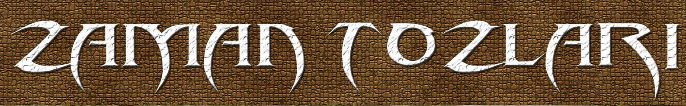

eteğini giymişti. Üstünde kısacık, koyu kahverengi bir deri süveter vardı.
96
Zaman Tozları
Siyah topuklu ayakkabıları bacaklarının çarpıcılığını iyice arttırmıştı.
Kafasında yine evden aldığı sarı bir peruka vardı. Dudaklarına sürdüğü
kıpkırmızı ruj, afet görünümü tamamlamaktaydı. Serin şubat sonu sabahı
için kıyafeti hafif, ama bayağı etkindi.
“Bu topçuk teklemez di mi?”
“Hiç olmadı şu ana kadar.”
“Đyi. Dinle bak. Zili çalıcaz. Kameralara bakıp masum masum sırıtıcaz.
Kartçı Mahmut öğleden sonraları saunaya gider. Evde yoksa içeride
beklicez. Varsa bizi içeri buyur etmek için sabırsızlanacak zaten.”
“Çok misafirperver biri olmalı.”
“Ne demezsin.”
Metin villayı görünce cebinden topçuğu çıkartıp sol avucunda sıktı.
Đçinden aletin son kullanma tarihine toslamamaları için dua etmekteydi.
Yüksek demir korkuluklu ana kapının önüne geldiler. Đki kamera onların
hareketini takip etmekteydi. Belga uzanıp alışkın bir tavırla zile bastı. Metin
heyecanlanmıştı birden. Taktik icabı yanlarına ateşli silah almamışlardı.
Üstleri aranacaktı çünkü.
“Gülümse sevgilim.”
“Donuma gülümsemek üzereyim neredeyse.”
“Şakacı uzaylım benim.”
***
“Sonra dedim ki, nah geçersin. Cesedimi çiğnemeden bir adım
attırmam sana dedim.”
97
Sadık Yemni
Cevat başıyla arkadaşını onayladı. “Đyi demişin lan.”
Battal Sermet gururlu gururlu sırıttı. Bir doksan beş boyunda, yüz
yirmi kilo ağırlığında biriydi. Çok gözü pekti. Anlattıkları da doğruydu
büyük bir ihtimalle, ama nedense konuşurken gözlerini devirmesi ve
gereksiz el hareketleri yapması nedeniyle palavra sıkıyor gibi görünürdü.
Zil çalınca Cevat kapıyı gören ekrana baktı. Mini etekli genç bir
kadın ve öğrenci tipli gence alıcı gözle baktı.
Battal Sermet kaykıldığı sandalyede doğruldu. “Bunlar da kim
yahu?” Cüssesinden umulmayacak seri bir hareketle arkasına bastığı elli
numara ayakkabılarını normal duruma getirmişti. “Şu kırığı gözüm bir
yerden ısırıyor ama.”
Cevat kızı tanımıştı. Patronun eski manitasıydı. Adını unutmuştu.
Belgin gibi bir şeydi. Temiz yüzlü delikanlıyı bir yerden tanımıyordu.
Konuşma hattını açan düğmeye bastı. “Buyurun kimi aradınız?”
“Mahmut Beyzati’yle randevum vardı. Adım Belga. Beni tanır.”
“Mahmut Bey şu anda yoklar.”
“Kendisine bir paket getirdim. Hüsnü abiden.”
“Bir dakika lütfen.”
Cevat bu gibi durumlar için kullanılan özel telefondan patronu aradı.
Telefon beş kez çaldı. Kimse açmadı. Saunada olduğu için normaldi.
Ekrandan baktı. Bayağı fıstık olan kadının elinde küçük bir çanta vardı.
Hüsnü abiden gelecek beyaz tozlar o çantaya sığardı. Kadının süveteri
ilikliydi. Delikanlının anorağının önü ise açıktı. Silahlıya benzemiyorlardı.
Tam, ‘Birkaç saat sonra gelin,’ diyeceği sırada buna patronun
bozulabileceğini düşündü. Kadın üzerinde malla yakalanırsa bazı isimleri
98
Zaman Tozları
öksürebilirdi. Misafirleri, özellikle sarışın orospuyu iyi bir kontrolden geçirip
içeri alabilirlerdi. Hattı açan düğmeye basmadan önce Battal Sermet’e
baktı. “Ne diyorsun?”
“Bir çocukla, üşüyen bir kız,” dedi alayla. Ayağa kalkmış
gerinmekteydi.
Battal üst arama, hızlı davranma konusunda çok deneyimliydi. Fizik
gücü de müthişti. Ona çok güvenirdi. “Öyle, ama…” dedi. Bu iki kırılgan
kimsede bir uyuşmazlık, sıra dışı bir tehlike sezen yanı hafif bir alarm
çalmaktaydı. Patrona ulaşmak için kullandığı telefona bakarak içini çekti ve
kapıyı açan düğmeye bastı.
***
“Sence ne olacak?”
“Kartçı yok evde. Böylesi daha iyi. O şeyi cebine koy. Elin dikkati
çekmesin.”
Metin denileni yaparken ses yükselticisi cızırdadı. “Kapıyı açıyorum.
Biraz geriye çekilin.”
Yüksek demir parmaklıklı kapı yavaşça geriye doğru açılırken Metin
ve Belga geri çekildiler. Kapıda ızbandut gibi bir adam belirmişti. Üzerinde
krem rengi takım elbise vardı. Ceketinin önü açıktı. Kemerinin sol tarafında
tabanca taşıdığı belliydi. Arkasında kendi boyunda posunda dar omuzlu,
kısa saçlı, tilki bakışlı diğer adam belirmişti. Siyah ceketli, lacivert kot
pantolonluydu. Onun da ceketinin önü açıktı.
“Belga Hanım, çantanızı verin lütfen.”
99
Sadık Yemni
Kadın denileni yaparken kapı arkalarından kapanmaya başlamıştı.
Metin heyecanı şakaklarında hissetmeye başlamıştı. Mantığı, ‘Đşi içeride
bitir,’ diyordu.
Diğer adam kadının çantasını kontrol ederken krem takım elbiseli
silahını çekmeye hazır bekledi. Sonra arkadaşından gelen bir işaret üzerine
Metin’in üstünü aradı. Parmakları topçuğa değer gibi olduğunda Metin’in
içi cız etti. Adamın yüzünde beliren tereddüt birkaç saniye sürdü ve silindi.
Cebinde minik bir el bombası olacak değildi ya.
“Bu temiz.”
“Kadını da ara.”
Belga süveterini açınca eflatun renkli yakası çok cömertçe açık
daracık bluzu çıkmıştı ortaya. Kadının üzerinde silah saklayabilecek çok az
yer olduğu için arama kısa sürdü. Adamın iri elleri hiçbir yerde gereğinden
fazla oyalanmamıştı. Siyah ceketli de profesyoneldi. Çantadaki beyaz
torbayı bahçede çıkarıp bakmamıştı. Adamlar rahatlamışlardı. Đri yarı olan
kapıyı işaret edince Metin nezaketi falan boş verip öne geçti. Belga
anlaştıkları gibi hemen arkasından yürümekteydi.
“Şöyle geçin.”
Metin’in eli anorağının cebine gidince Belga arkadan sımsıkı
delikanlıya yapıştı.
“Ne oluyo...”
Kırk üç saniye iki korumanın tabancalarını ödünç almak için bol bol
yetmişti. Belga’nın tabancayı tutuş şekli ve yüz ifadesi çok caydırıcı
olduğundan özellikle iri yarı olan bir atağa kalkışmamıştı. Gene de ellerini
bağlarken bir sakatlık çıkmasın diye ikinci bir dondurma seansı
100
Zaman Tozları
uygulamışlardı. Şimdi korumalara ait olan odada elleri kalın sanayi bandıyla
arkadan bağlı sandalyelerde oturmaktaydılar. Olup bitenlere akıl
erdirememekle birlikte biraz toparlanmışlardı. Kadının onları vurmaması
nedeniyle umutlu, hatta biraz cüretkârdılar.
“Bizi gazla bayılttınız. Mahmut abim bunu yanınıza bırakmaz.”
Siyah ceketli daha kurnazdı. Belayı tahrik etmeden savmaya
çalışıyordu.
“Çok geç olmadan çekin gidin.”
Evi kolaçan etmekten yeni gelmiş olan Belga, “Koro başladı yine,”
dedi. Evin içi sıcak olduğu için ceketini çıkarmış ve tabancasını kemerine
iliştirmişti. Nikita filmindeki kıza benziyordu. Daha dolgunuydu tabii.
“Acaba ağızlarını da mı bağlasak?”
Adamlar birbirlerine bakıp susmak konusunda hızlı bir mutabakata
varmışlardı. Gazla bayılma izahını komik bulan Metin sonunda kapıda
durdukları anları kaydeden diski bulmuş ve üzerine Youtube’den bulduğu
oyuncu kedilerle ilgili kısa bir filmi kaydetmişti. Bu arada iki dondurma
işleminin aparatın zaman kodunda bir sorun yarattığın fark etmişti. Daha
önceden tahmin ettiği bir gelişmeydi. Teknik bilgisi o sorunu çözmeye
yetmezdi. Yüzlerinin görünmemesi fazlasıyla kâfiydi zaten.
Kısa bir sessizlik anı, siyah ceketlinin ceketinin sağ cebinden gelen
telefonun sesiyle bozuldu. Belga böyle bir şeyi beklemekteydi anlaşılan.
Adamın cebinden telefonu alıp baktı ve, “Hemen geberecek ya da durumu
idare edeceksin,” dedi. “Sizinle bir derdim yok. Sıkıntım Mahmut’la.”
Siyah ceketli, hızlı karar alabilen biriydi. Mahmut iptal edilirse bu
rezil durumun hesabını soran da olmayacağı sonucuna çabucak varmıştı.
101
Sadık Yemni
Diğerinin yüzündeki itiraz çizgileri derin değildi. Susacaktı besbelli.
Belga telefonun açılış ve hoparlör düğmelerine bastı ve adamın sağ
yanağına yasladı.
“Beni aramışsın Cevat.”
“Evet abi. Şey için aradım. Postacı… Bir paket getirdi. Biraz kalındı.
Ucundan azcık yırttım. Sakat bir şey yok.”
“Kimdenmiş?”
“Cevat Korkmazer’den. Kayseri’den postalamış.”
“Ne yollamış?”
“Đçine bakmadım. Normal matbuat. Đadeli taahhütlüydü. Alayım mı
diye soracaktım. Sizi bulamayınca imzaladım.”
“Đyi yaptın. Ben şimdi yoldayım. On dakika içinde evde olurum.”
Hattan ses kesilince Metin kadına baktı. Yüzünde memnun bir ifade
vardı. Mahmut’un zokayı yuttuğunu düşünmekteydi. “Bitti mi senin işin?”
Metin başıyla olumlayınca ensiz ama uzun masadaki gazetenin
üzerinde duran seloteybi alıp iri yarı olanın ağzını bağladı.
“Söz verdin. Bize dokunmayacaktın,” dedi Cevat biraz paniklemiş
halde.
Belga içini çekerek seloteybi aldığı yere bıraktı. Hemen yanında
duran tabakta kıvrılmış portakal kabukları ve küçük bir bıçak durmaktaydı.
Beyaz saplı bıçağı aldı ve, “Şu ana kadar çok iyi idare ettin,” dedi.
“Mahmut’u işkillendirmeden içeri alırsan söz veriyorum seni serbest
bırakıcam.”
102
Zaman Tozları
Adam gözlerini arkadaşından kaçırarak başını sallayınca bileklerini
bağlayan bandı kesti. Bıçağı masaya doğru atarak belinden tabancasını
çekti. Metin de aynı şeyi yapmıştı.
“Kalk şimdi ayağa. Normalleş. Patron gelince bir kıllık yapma. Yoksa
ilk sen gidersin.”
“Anladım.”
Dakikalar çok yavaşça geçti. Mahmut Bey’in çelik rengi Mersedes-
benz SL 63 AMG 2009 model arabası kapının önüne geldi. Metin
bilgisayarın hard diskiyle uğraşırken arabanın yirmi kadar fotoğrafını ve
teknik bilgi dosyalarını gördüğü için unutmamıştı.
“Kapıyı aç.”
Cevat denileni yaptı. Kontrol panelinden pip pip sesi duyulmaya
başladı. Adamın korunmak için bayağı masraf yaptığını düşünen Metin
heyecanlanmıştı.
“Cevat, sizi nasıl faka bastırdığımızı gördün,” dedi Belga alçak bir
sesle. “Bir numara yaparsan önce seni vuracağımı biliyorsun değil mi? ”
“Evet.”
Belga, adamın ses tonundan memnun, başını salladı. Metin topçuğu
eline almıştı. Cevat kapıyı aralayarak patronunu karşılamaya hazırlandı.
Kapının hemen arkasında Metin durmaktaydı. Belga elindeki silahı adamın
sırtına doğrultmuş durumda holde durmaktaydı.
“Hoş geldiniz efendim. Bagajda bir şey var mı?”
“Yok. Hanım yolda indi. Alışveriş yapacak. Telefon edince Đhsan gidip
alacak.
103
Sadık Yemni
Mahmut Bey kapının arkasındaki Metin’i ve holde elinde tabanca
tutan kadını aynı anda gördü neredeyse. Saunadan aldığı sıhhat bir anda
gözeneklerinden uçmuş gitmişti sanki. Adam on yaş yaşlanmış gibi suratı
çökmüştü.
“Cevat bu… bu…”
Metin, Belga’nın işareti üzerine topçuğun düğmesine bastı. Hazırlıklı
ve idmanlı oldukları için Mahmut Bey’i ve adamını kırk üç saniye dolmadan
etkisiz hale getirdiler. Kapının zamansız kapanışını arabanın ön tarafındaki
bir kuş pisliğini temizleme uğraşı yüzünden fark etmeyen şoföre de aynı
işlemi uyguladılar.
Mahmut Bey’i elleri arkadan bağlı durumda oturma odasına
getirdiler ve bir koltuğa oturttular. Diğer üçü elleri, ayakları bağlı halde
güvenlik odasında istirahat etmekteydiler.
“Belga her şeye yeniden başlayabiliriz. Bir hata yaptım. Telafi
edebilirim.”
Belga alayla gülümsedi. “Bak sen.” Tabancasını kemerine takmıştı.
Bir macera filmi aktrisine benziyordu.
“Dinle. Tazminat ödemeye hazırım.”
“Ne kadar? Đkimiz de teneşir kaçkınıyız malum. Diğer ölüleri de
unutma. Babamı kurtlara teslim ettin bilerek.”
Adamın yüzünden buradan sağ çıkmaya pek umudunun olmadığı
okunmaktaydı, ama ikna etme çabalarına devam etmeye kararlıydı. “Đki yüz.
Adam başı.”
“Đki adamın nalları dikti. Diğerleri içerde ambalajlanmış durumda.
Kim yardım edecek sana ha? Kim? Aç kesenin ağzını.”
104
Zaman Tozları
Mahmut’ta hemen yılacak adam tipi yoktu. “Yarım milyon sana. Đki
yüz delikanlıya,” dedi. “Evde daha fazla para yok.”
Metin adamın ikisini birbirlerine düşürmeye çalıştığını şöyle böyle
sezmekteydi. Açıkça Belga’yı yedi yüz bini almaya teşvik etmekteydi.
Bakışları karşılaşınca kadın ona göz kırptı. “Kurnaz di mi?” Adama döndü.
“Mahmut Bey. Zaman dar. Karın gelecek eve. Onu da tehlikeye atma.”
Grimsi parlak kumaştan yapılma çok pahalı takım elbisenin içindeki
siyah gömlekli adamda ikinci sıhhat çekilmesi hali belirmişti. “Başka para
yok evde.”
Belga sırıtarak adama bakarken yüzü ciddileşti. “Dinle bak. Sen
organizasyon adamısın. Sana zaman yok diyorum, niye anlamıyorsun? Esas
zulayı aç. Şu divanın altındakini.”
Adamın yüzü şaşkınlıkla sarsılmıştı. “Bir zamanlar biricik sevgilindim.
Adım da Belga değildi. Bu eve çok geldim gittim. Unuttun mu verdiğimiz
iki kişilik partileri? Đnsanlar sarhoşlayınca neler anlatırlar sen çok iyi bilirsin.”
Metin bu malumatın böylesine gerilimli bir ortamda dahi kalbine
kıskançlık pençesi indirebilmesini şaşırtıcı bulmaktaydı.
Adam içini çekti. “Beni sağ bırakacağını nereden bileyim?”
Mahmut Bey bunu derken duygularının sol omzunun arkasında
duran pastel tonlu yağlı boya tabloyla özdeşleştiğini düşündü Metin. Bu şu
anda cevabını kendisinin de bilmediği bir soruydu. Adam soğukkanlı bir
şekilde öldürülmeleri için komut vermişti, ama Metin aynı şekilde karşılık
verebilecek bir yapıda değildi. Dizginler Belga Hanım’ın elindeydi zaten.
Onun bir karar alması gerekmiyordu.
105
Sadık Yemni
“Sadece sen değil. Karın, akşam eve gelecek oğlun ve adresini
bildiğim büyük kızının hayatları da söz konusu. Kendini hayatını riske atıp
parayı vereceksin ve bakacaksın ne olacağına. Başka hiçbir şansın yok.”
Mahmut Bey’in çok badire atlatmış ve insan tanır yanı kararını
vermişti. Adam başıyla olumladı. “Tamam. Bunun ellerimi çözmen lazım.
Laptopla açabilirim ancak kasayı. Şifre çok karmaşık bir programla
verilebiliyor. Bir de… bir şeyi merak ettim. Beni neyle tesirsiz hale
getirdiniz?”
Belga, “Gazla,” dedi yan gözle Metin’e bakarak. “Teknoloji çok
ilerledi malum. Şimdi işimize dönelim.” Kadın işaret edince Metin gidip
içeriden küçük bıçağı getirdi. Ve Mahmut beyin ellerini bağlayan enli bandı
kesti. Sonra gidip Mahmut Bey’in bürosundan içinde dizüstü bilgisayarın
durduğu siyah çantayı getirdi. Belga çantanın içini kontrol edip başıyla
onaylayınca adam önce üzerinde parlak gümüş küllük, sigara kutusu
bulunan polyester sehpayı, ardından çok pahalı görünümlü, ipek kaplı,
limon sarısı divanı geri çekti.
Yerler tahta döşemeliydi. Divanın altında belli belirsiz bir bitişme
çizgisi vardı. Adam onu kaldırınca metal bir kasanın tepesi göründü.
Hidrolik bir sistem, düğmesine basılınca fısıltımsı bir sesle çalıştı. Altmış
santimetre kenarlı bir küp şeklindeki kasa yükselmeye başladı. Tabanı
zemin hizasına gelince durdu. Adam bilgisayardan çıkardığı kablonun
ucunu kasanın ön yüzündeki USB yuvasına yerleştirdi ve açılışı sağlayan
işlemi başlattı.
“Yedi sekiz dakika sürecek.”
106
Zaman Tozları
Tam o sırada adamın ceketinin sağ cebindeki telefonu çaldı. Akıcı
bir samba melodisiydi. Adamın yüzünde yarım saat önceki hayatını özler
bir ifade belirmişti. Ses ikinci bir kez yinelendi ve sonunda sustu. Dakikalar
çok yavaş aktı bitti. Bir sinyal sesi duyuldu. Kapak aralanmaya başlamıştı.
“Geri çekil.”
Belga sadece birkaç saniye geç kalmıştı bunu demekte. Adam çevik
bir hareketle kendini arkaya doğru atarak divanı siper aldı. Metin elindeki
küçük tabancayı ancak görebilmişti. Silahın namlusu kadına yöneldiğinde
Metin elinde hazır beklettiği topçuğun düğmesine bastı.
“Vay puşt. Silah kasanın içinde değildi. Sağ yanına iliştirilmiş. Đyi ki
bu topçuk var. Yoksa karnımda bir delik açılacaktı.”
“Şimdi ne yapacağız?”
“Şunu paketleyelim önce.”
Bant hazırdı. Adamın ellerini arkadan bağladılar. Sonra ayak
bileklerine ve ağzına aynı işlemi uygulayıp koltuğa oturttular.
Kasanın içi avro ve dolar istifleriyle doluydu. Belga yüklükten
bulduğu bir spor çantasını banknotlarla doldurdu. Sonra ikinci bir çanta
daha bulup ona da döviz yükledi. Kendince bir nedenden kasada bir çanta
daha çıkartabilecek kadar paraya dokunmamıştı.
“Saymadım, ama sanırım adam başı üç çeyrek milyondan fazla. Türk
lirası olarak.”
Metin bundan sonrasını düşündüğü için para onu yeterince
heyecanlandıramıyordu. Belga bunu hemen hissetmişti.
107
Sadık Yemni
“Dinle. Sen şimdi al payını ve git. Gerisine karışma. Tamam mı?”
Eğilip çantasını aldı ve içinden çıkardığı anahtarları uzattı. “Bunlar o
kaldığımız evin anahtarları.”
Metin otomatik olarak anahtarları alıp pantolon cebine tıktı. Bir yanı
hemen tabanları yağlamak istiyordu, ama diğer yanı kalıp bazı şeyleri
engellemek niyetindeydi. Bunun artık mümkün olmadığını da çok iyi
bilmekteydi diğer yandan. En iyisi kadını dinlemekti.
Birlikte holde yürüdüler. Kapının ağzına geldiler. Kadının hafifçe
çekik kahverengi gözleri karmaşık duygularla yanmaktaydı adeta. “Dinle,
eğer başka türlü…” dedi. “Başka türlü bir dünya mevcut olsaydı. Puşt yeri
olmasaydı böyle… Senle beraber takılırdık. Ama ikimiz için de iyi olmaz
artık. Haydi, sen yoluna ben yoluma.”
Kadının dudakları dudaklarına değince Metin’in gözleri doldu.
Arkasında bir felaket bırakarak gidiyordu. Kadın sarılınca o da sımsıkı
sarıldı. Parfümünü derin derin içine çekti. O kadar gerilime rağmen kadını
arzu eden yanı şımarıkça gerinmekteydi.
“Hadi benim uzaylı sevgilim,” dedi Belga. Karmaşık düşünceler
perdesi birkaç saniyeliğine aralanmış seven ve kırılgan kadın yanı belirmişti.
“O Moda’daki eve geri dön. Bir kere alışveriş yap. Đki gün dışarı çıkma. Đyi
düşün taşın. Üçüncü günün gecesi arazi ol. Giderken anahtarları posta
kutusuna at. Anladın mı? Haydi… Zaman dar.”
Metin o evden üç yüz beş yüz metre ötede bir taksiye el
salladığında Belga’yı bir daha asla görmeyeceğini derinden hissetti. Đnşallah
hayatındaki ilk sevgilisi içinde dans ettiği ölümcül çemberden sağ salim
çıkabilecekti.
108
6
Belga’nın gözleri dolmuştu Metin’in arkasından bakarken. Hızla
toparlandı. Elinin tersiyle gözlerini sildi ve dış kapıyı örterek içeri girdi. Şu
andan itibaren her saniyenin hayati önemi vardı.
Koruma odasında üç adam uslu uslu oturmaktaydı. Cevat’ın
ayaklarını bağlayan bantları bıçakla kesti. Adamın bıçak küçük olmasına
rağmen korkması iyiydi. Az sonra yapması muhtemel şeyler için itici yakıt
olacaktı.
Hole çıkınca Belga gözünü üzerinden ayırmadan koruma odasının
kapısını kapattı ve elindeki tabancayı adamın sol yanağına dayadı. “Kulağını
iyi aç. Tek baskı laf edicem,” dedi fısıldayarak. “Şimdi içeri gidicez. Olanları
görecek ve kendin karar vereceksin. Ağzından tek kelime söz çıkarsa seni
hemen vurucam. Anladın mı?”
Cevat’ın ağzı bağlıydı, konuşamazdı, ama homurdanmak yerine
başını sallaması hoşuna gitmişti.
Adam önde oturma odasına girdiklerinde Mahmut apışıp kaldı. Bu
durumdan paçayı sıyırabileceğine değin minik bir ümit besliyorsa bile
bunun suya düştüğünü anlamıştı. Zeki bir adamdı. Sarhoşladığında hangi
zeki hilelerle rakiplerini nasıl birbirlerine düşürdüğünü böbürlenerek
anlatmayı çok severdi.
Sadık Yemni
Cevat işaret ettiği sandalyeye oturunca Belga ayaklarını yeniden
bantladı. Bu defa bandı sandalyenin ayaklarından birinden de geçirmişti.
Mahmut’un yüzünde kendine güvensizlik gülü açmaktaydı. Sonra
doğruldu. Cebinden küçük bıçağı çıkardı. Ve adamın ellerini arkadan
bağlayan bandı kesti. Sağ elini bilekten yeniden bantladı ve bandı iki
sandalyenin arkalığına geçirdi.
Bant neredeyse bitmişti. Buradaki işi de öyle...
Bandı solundaki küçük büfenin üstüne bıraktı. Annesini hatırlamıştı
yine. Filmlerde ve dizilerde bu tür zengin evlerine has içleri tıka basa kristal
malzeme, pahalı tabak vb. yüklü yakışıklı büfeleri görünce bir tanesine
sahip olmak için çok özenirdi. Büfe müfe görmeden bitmişti kadıncağız.
Önce Mahmut’un, sonra da Cevat’ın ağzındaki bantları sertçe çekti
aldı. Đkisinin yüzünde de beliren ‘ağda yaptıran hanım’ ifadeleri komikti,
ama gülecek hiç hali yoktu.
“Bak Belga, bu para hiç. Seni milyoner ederim.”
Belga az önce Metin’in kullandığı tabancayı sol eliyle belinden
çekince adam sustu. Gözleri fırıl fırıldı. Bir kurşunla kafası patlayana dek
çabalamayı sürdürecekti.
“Ablamı unuttun mu Mahmut? Kaç yaşındaydı yattığında? 12 mi?
Hadi 13 diyelim. Bütün adamlarına peşkeş çektiğinde? 14. Yüksek doz
eroinden ölüp gittiğinde 15. Kaçmış?”
Đki tabanca üzerine yönelince, Mahmut’un dili çözüldü. “Tazmin
ederim her şeyi? Yeminle. Üç milyon dolar. Söz diyorum bak.”
“Soruma cevap ver. Kaç yaşındaydı ırzına geçtiğinde?”
110
Zaman Tozları
Mahmut gözlerini güç bela Cevat’tan kaçırarak cık cıkladı. “Yanlış
nokta… Bazı hatalar… Herkes…”
Adam Belga’nın yüzündeki ifadeyi iyi okumuştu. Bu sözler gelecek
kurşunu sadece hızlandırmaya yaramaktaydı. Derin bir nefes alıp, “Ne
istiyorsun?” diye sordu.
Belga tetiğe baskı yapan parmaklarının karıncalandığını hissederek
bunu azıcık yumuşattı. “Duydun mu Cevat?”
Adam başını salladı. Kelime seçimiyle bir sorunu olmasından
korkuyordu besbelli. Sol elinin serbest bırakılmasını doğru yorumlamıştı
ama. Kulağı kesik biriydi.
“Ne istiyorsun?”
“Bu odaya… O… Başka bir şekilde gelseydim, inan ki, birinizi bile sağ
bırakmazdım. Bir saniye tereddüt etmezdim. Babamı öldürttün. Ablamı
intihar ettirttin. Annemi rezil ettin. Kadın kırkını görmedi be. Ben akraba
yanlarında sığıntı yaşadım. Sonra on sekizimde beni metres yaptın kendine.
Ama dişli çıktım di mi? Kabul et. Đstediğin gibi kullanamadın. Peşkeş
çektiremedin. Her kuşun eti yenmez. Sonra da beş paralık malı bahane
ederek beni temizlemeye kalktın. Eğer buraya…” Metin’le ilgili bir şey
söylememek için sözlerine kısa bir ara verdi. Metin saf bir delikanlıydı, ama
o topçuk normal bir şey değildi. Hızla unutması ve üzerine tek kelime bile
etmemesi gerekmekteydi. “Yemin ederim bütün sülaleni… Yalnız… Allah’ın
bir işareti. Yoksa o evden…”
Belga kendini topladı yeniden. Annesinin öldüğü günü hatırlamıştı.
Komşuları Kerim abinin arabasıyla hastaneye getirdiklerinde ölmek
üzereydi. Akciğer embolisi demişti genç bir doktor. Kaç yaşında olduğunu
111
Sadık Yemni
sormuştu ardından. Bir ay sonra on dörde basacaktı. Ablası gibi erken
serpilmiş gösterişli bir kızdı. Hastalık sigortaları yoktu. Neyse ki uzak bir
hala hastane ve cenaze masraflarını üstlenmişti. Sonradan öğrenmişti
embolinin ne olduğunu. Annesi kan pıhtısından değil art arda gelen hayat
sıkıntısı pıhtılarından ölmüştü.
Yanakları ıslaktı. Sol elindeki tabancayı Cevat’ın sağ dizinin üstüne
koydu. Diğer tabancayı adamın şakağına dayamıştı. “Şimdi tabancayı al ve
patronunu vur.”
“Cevat bunu yaparsan, bunu… Sana ödetirler. Hiçbir yere
kaçamazsın.”
“Al tabancayı. Çok yavaş.”
“Sakın yapma. Seni alet ediyor.”
Cevat’ın sol eli silahı kavrayıp Mahmut’a yönelince Mahmut
oturduğu yerde doğrulmaya ve ağza alınmayacak küfürler savurmaya
başladı. Sonra silah patladı. Kalbine giren tek kurşun Mahmut Bey’in
telaşını dindirdi. Sandalye arkaya doğru yaylandıysa da devrilmedi.
Mahmut’un taze cesedi sol yanına yuvarlanarak hareketsiz kaldı. Tam
arkasındaki kirli beyaz duvarda küçük bir oyuk belirmişti.
“Ver silahı bana.”
Cevat’tan ısınmış silahı aldı ve gidip Mahmut’un cesedini inceledi.
Kurşun önden girmiş ve sırtından çıkmıştı. Yarı aralık duran ela gözler
eşekler cenneti manzarasına dönüktü artık. Ailesinin intikamı alınmıştı.
Belga daha önce hazır ettiği bir bezle oturma odasında bırakması
muhtemel bütün izleri sildi. Cevat işin gidişatını çakmıştı. Onu da yeni bir
hayat bekliyordu artık.
112
Zaman Tozları
Belga kasayı işaret etti. “Paralar orada. Đster arkadaşlarını ortak et,
ister etme. Mahmut’un karısının akıbeti de sana kalmış. Beni ilgilendirmez
artık. Patronun telefonuna konuştuğunda karısını yanındaydı bir ihtimalle,
bunu unutma. Kafayı kullan, en uygun planı uygula. Bana sorarsan üçünüz
aranızda anlaşın ve bir hikâye uydurun. Düşmanı çoktu hırtın. Çok
kurcalamazlar belki. Her şeyi harfi harfine anlatırsan hiç kimsenin size
inanmayacağını da unutma. Paraları iç ettiğinizi düşünecekler.”
“Tamam.”
Belga adamı öyle bırakıp çantayı kaptı ve evden çıkarak aşağılara
doğru yürüdü. Şu andan itibaren ne yapacağını çok iyi bilmekteydi. Arazi
olabileceği birkaç güvenli yer vardı. Elinde para olduktan sonra sırtı yere
gelmezdi.
Bir gecelik sevgilisi Metin’i özleyecekti. Onun başı daha ciddi
dertteydi. Metin’in annesi arabada giderken konuştuğunda Osman Demir
adlı birinin kendisine yardım edebileceğini söyleyerek bir telefon numarası
vermişti. Bunu güvenlik nedeniyle o sırada söylemediği için unutmuştu.
Başı 0536 ile başlayıp sonu 28’le biten bir numaraydı. Bunun bir sorun
çıkarmaması için içinden dua etti. O topçuk neyse 16’lık sabık sevgilisinin
peşinde çok sırtlan olmalıydı.
***
“Grafik iki kişide otuz dört saniyeyi gösteriyor,” dedi Keten Hoca.
Kaba sarılmış bir yaprak dolması kalınlığındaki işaret parmağını Metin’in
grafiği çizdiği kâğıdın üstüne koymuştu. “Aparatı on kişi üzerinde
113
Sadık Yemni
denememiş olmalı. Soru işareti var. Bir dakika diye tahmin etmiş. Ama
dokuz kişilik partiye baskın verdiğinde saatler sadece otuz sekiz saniye geri
kalmış. 38/9 = 4,2 saniye eder adam başı. Bankada müdür, yardımcısı,
dokuz memur, beş müşteri, bir koruma toplam on beş kişi vardı. 57/15=3,8
saniye eder.”
Osman başını salladı. Keten Hoca’nın yüzü heyecanlıydı. Meseleyi
aşırı ilginç bulmaktaydı haklı olarak.
“Onu da buradan almıştım.”
“Faturanız var mı?”
“O kadar aradım bulamadım.”
“Bir daha arasanız.”
“Aaa o kadar yol geri gidilir mi ayol.”
Đçeriden Fuat’ın cazgırımsı bir bayan müşteriyle konuşması gelince
Hoca sesini alçalttı. “Sayı ne kadar artarsa artsın geri sekmenin adam başı
üç saniyeden aşağı düşeceğini tahmin etmiyorum. Çünkü sınıfta otuz beş
kişiyle meydana gelen zaman kayması yüz yirmi iki saniye. Metin’i sayma.
122:34= 3,5 saniye. Đkinci kez bu sayıya sen eklendiğinde ise yüz yirmi beş
saniye oldu.”
“Yani?”
“Dondurulan insan sayısı önemli,” dedi Hoca. “Grafik de düzgün
değişmiyor gibi, ama mümkün olsaydı da test yapabilseydik… Bu sayı iyice
arttığında bile adam başı ortalama üç saniyelik bir sekme söz konusu
olacağını görecektik. Đki kişiyle yaptığı ölçüm ya hatalı, ya da bir kereye
mahsus anomali.”
114
Zaman Tozları
Osman’ın kafasında bir şimşek çakmıştı. “Notlarından ilk kez babası
üzerinde denediği anlaşılıyor. Tahmini sekme sekiz saniye. Ama o iki kız ilk
işiydi. Ev dışında. Kızlardan birine âşık olduğu anlaşılıyor. Her defasında
çiçek hediye etmiş. Romantik bir zaman hırsızımız var.”
“Đlk iş olmasıyla… Hissiyatı mı etkiledi diyorsun yani?”
“Metin’in topçuk dediği şey beyniyle direkt endeksli olmalı,” dedi
Osman. “Komada kaldı. Elektrik şoku yemişti. Bu sayede uyarlanmış olmalı.
Beynindeki heyecan, geri sekmeyi etkileyebilir. Ölçüm yanlış değilse.”
Hocanın iri kahverengi gözleri ‘aynen bilakis’ bakışıyla kısıldı.
“Haklısın. Diğerlerinde göreceli daha soğukkanlıydı. Alışmaya da başlamıştı.
Acaba şu anda nerede?”
“Annesini aramış. Dün akşam. Aratmış bir genç kadına. O kazadan
sonra cep telefonu kullanamıyormuş. Numarayı saptadık. Bu sabah polise
bildirdim.”
Osman burada sözlerine ara verip küçük masanın üzerindeki
bloknota eğildi. Birinci sayfada Fuat’ın asabi el yazısıyla çiziktirdiği bir liste
vardı. Sayfayı çevirerek boş bir sayfaya ulaştı. ‘Đşi biliyorlar elimizde yirmi
dört saat falan var’ yazdı ve, “Bakalım numaradan ne çıkacak,” diye
mırıldandı.
Hoca zarfı almıştı. “Aklıma bir şey geldi,” dedi lafı çevirerek. “Beynin
kayıtlarından iki dakika sildirmek nasıl bir duygu?”
“Eğer teknik ölçümler olmasa kimse beni o iki dakikayı iki kere
yaşadığıma inandıramazdı.”
“Hiçbir şey mi hatırlayamıyorsun?”
115
Sadık Yemni
Osman neredeyse bir gündür üst üste iki kayıt izi bulmak için
beynini yormaktaydı. Başını olumsuzca salladı. Aklına Metin’in beyni
gelmişti. Delikanlı ele geçerse beynini kim bilir kaç parçaya ayıracaklardı
iyice incelemek için. Önce birkaç yıl bir laboratuarda kapalı kalıp binlerce
teste tabi olacaktı haliyle. Osman delikanlının annesi ve babasıyla
konuştuğu anları düşünerek içini çekti. Mümkün olursa onu kurtarmak için
elinden geleni yapacaktı.
“Hesabımıza dönersek,” dedi Hoca. Bloknotun temiz bir sayfasına
cetvel, kurşun kalem ve tükenmez yardımıyla bir grafik çizdi. “Dondurulan
kimselerin sayısı çok artsa bile adam başı geri sekmenin üç saniyeden aşağı
ineceğini düşünmüyorum.”
116
Zaman Tozları
Osman grafiğe ve Hocanın sonradan eklediği meşum çizime bakınca
işin ciddiyeti kafasına bir kere daha dank etti. “On bin kişi olsa da mı? Yüz
bin ya da?”
Keten Hoca başıyla olumladı.
“Öyle bir beklentim var.”
Osman işin sarsıcı boyutlarını düşünürken zayıf yanı bunları hiç
bilmemiş olmayı özlemekteydi, ama merkezdeki çelik nüve kararlıydı.
“Đki dakikayı sınıfça iki kez yaşadık. Biri normaldi. Diğeri üste kayıt.
Bu durumda Vakiteri zamanı çalmış mı oluyor, yoksa başka bir şey mi?
Đnternetten biraz araştırdım bu sabah gelmeden önce. Bir sürü uydurtu
malzeme. Dişe dokunur tek şey hayal ürünü. Bir yazar ‘Zaman Tozları’ diye
bir öykü bile yazmış. Özetini okudum. Geri kalan saatlerden, zaman
sekmelerinden falan söz ediyor. 1997 tarihli. Esas metin yoktu. Vakit olursa
onu da araştırmak lazım. Kısacası Vakiteri zamanı nasıl çalıyor ve onu ne
yapıyor?”
“Vakiteri üzerine söylenen her şey mitolojik doğal olarak. Muhayyile
ürünü. Ama ateş olmayan yerden de duman çıkmaz. Eski kitapları tamamen
yoğa yazmamalı. Eskiden cep telefonu, uydu haberleşmesi, televizyon,
internet yoktu. Đnsanlar kentlere bu kadar büyük sayıda yığılmamışlardı.
Paul Allan Trenbore de atom saatleriyle ölçülen zaman çalkantıları üzerine
yazmıştı malum. Erken ölümü büyük kayıp. Başka yazarlar da var. Saygın
fizikçiler.”
“Nerede kalmıştık?”
Fuat içeri gelince Hoca sözlerine küçük bir ara verdi ve devam etti.
“Kavrayabildiğim kadarıyla ben Vakiteri diye çok güçlü bir zekâ sahibi
117
Sadık Yemni
varlığa inanıyorum. Đnsan değil kesin. Yerçekiminden falan pek fazla
etkilenmeyen bir fizik yapısı olmalı. Hızını başka türlü izah etmek
zorlaşıyor.”
“Cin mi yani?” dedi Terra Fuat. Sarı ceket, beyaz gömlek ve açık mavi
kot pantolon giymişti. Kahverengi mokasenleri biraz eskimişti, ama cool bir
görünümü vardı.
“Cin teknoloji öncesi insanların kendi fizik yapılarından farklı olan
varlıklara verdikleri ad. Din kitaplarına da girmiştir. Şimdi zeki, organik
yapılı olmayan ve hızlı yaratıklar da diyoruz bahsi açıldığında. Zamanı ne
yapıyor sorusuna gelince; bir fikrim var, ama nasıl formülize edeceğimi
kestiremiyorum henüz.”
“Kırk üç saniyelik hareket sahası da denkleme girmeli öyle değil mi?”
diye sordu Fuat.
“Tabii ki,” dedi Hoca. “Metin delikanlının notları işe yaradı. Bu sabah
bu yeni bilgiyi duyunca ilk aklıma gelen Vakiteri’nin kırk üç saniyelik
donmayı hediye ettiği, bunun karşılığında bir şey aldığı oldu. Alma lafı bizi
yanıltıyor olabilir. Bu zaman donmaları ve sekmeler Metin’in velinimetinin
bir şekilde işine yarıyor olmalı. Cebine bir şey girmesi gerekmez. Ama
‘neka ekmek, oka köfte’ olduğu kesin.”
“Newton’un üçüncü kanunu mu yani?” dedi Fuat alayla. “Etki tepkiye
eşittir.”
Hoca başını salladı. Yüzü ciddileşmişti birden.
“Ya delikanlı o topçuğu bir stadyumda kullanmaya kalkarsa? Elli
altmış bin kişinin ortasında. Belki de daha fazla… Kişi başına ortalama üç
saniyeden ne eder?”
118

Zaman Tozları
Terra Fuat eline çok yakın duran hesap makinesine sarıldı. Tuşlara
alışkın parmaklarla yıldırım gibi bastı ve, “Kırk bir saat geri kalacak saatler,”
dedi. “O kadar insan kendini birden evde ve işte mi bulacak yani? Böyle bir
şey olabilir mi? Dünyanın çivisi çıkar be yerinden. Kelebek değil, ejderha
etkisi olur.”
Osman böyle bir şeye pek ihtimal vermiyordu. Hoca da öyle olmalı
ki, cıkladı. Kurşun kalem ve mavi tükenmez yardımıyla hızla bir şekil daha
çizdi. Parmağıyla ortadan geçen çubuğu işaret etti.
“Sanmıyorum. Geri kaymada bir sınır olmalı. Enerjinin korunumu
yasası gereği. Küçük kramplar tamam, ama daha büyüğünde etkilenim
başka türlü olabilir. Bütün enerji, zaman krampını yaratan noktada
odaklanabilir.”
119
Sadık Yemni
Fuat’ın ağzı açılmıştı şaşkınlıktan. Osman aynı anda aynı şeyi
düşündüklerini fark ederek huşuyla sarsıldı. Metin için yegâne çıkış yoluydu
bu saatten sonra. Eğer varsayımları essahsa tabii.
“Vakiteri’yle ilgili bilgiler mitolojik karakterli malum,” dedi Hoca.
“Hızır’ı düşünün. Vakiteri cinsinden güçlere sahiptir. Bir yere göz açıp
kapayana kadar gider.”
“Işık hızıyla mı yani?” dedi Fuat.
Hoca sağ elini bilekten döndürerek kendi tabiriyle müphem işareti
yaptı. “Zaman, çok plastiksi, bükülüp-katlanılabilen bir akıştır. Zaman
olayının enerji alanlarına bağlı titreşimsel bir ritmin yansıması olduğunu
unutmayalım. Uzaya bağlı bu farklı zaman frekanslarının uzayda yaratılacak
güçlü elektromanyetik uyaranlar karşısında birbirleriyle eşzamanlı ve
hareketli hale gelebileceğini ve bu frekansların üst üste binip
çatışabileceğini ifade etmek istiyorum. Dev elektromanyetik düzeneklerce
yaratılan çatışma alanlarının ortasına düşen insanlar ve cisimler, gemiler ve
uçaklarda uzay-zamanın makroskopik ölçeklerde kendi üstüne bükülüp
eğrilen çizgilerince zamanda ya da mekânda kaymalara uğrayabilirler.
Philedelphia deneyi böyle bir şeydi sanırım.”
“Zaman dördüncü boyut olduğu için mi maddeyi, yani üç boyutu
böyle etkiliyor?” dedi Osman. Hocanın akıl yürütmesinin sonucundan
korkmaya başlamıştı. Metin’in neden olması muhtemel kaosun sınırları
hızla genişlemekteydi.
“Aslında zamanın dördüncü boyutta asılı duran elektromanyetik bir
frekanslar bütünü olduğunu kavradığımızda sahne gözlerimizin önünde
açılıyor,” dedi Hoca. “Katı sandığımız, gerçek dediğimiz tüm yaşamımızı
120
Zaman Tozları
paylaştığımız her şey, tüm binalar, bu dükkân, bu gezegen, yıldızlar, hatta
uzay boşluğunun kendisi bile ve hatta tüm bunları yansıtan, içine alan
‘Geçmiş-Şimdi-Gelecek’ dediğimiz zaman kalıplarının bile dev bir
elektromanyetik seraptan başka bir şey olmadığını idrak ederiz.”
“Rüyalarda ulaştığımız gerçeklik,” dedi Terra Fuat içini çekerek.
Hoca gülümsedi. “Metin kardeşimizin elinde yüksek güç ve
frekanslarda elektromanyetik alan üreten bir araç var. Bunu ona Vakiteri
verdi. Sıkıntısı zaman apartmak falan değil. Zaman esnemeleri yaratmak
amacında bana sorarsanız. Tüm kâinat evrensel bir zaman kalıbının içine
hapistir. Tanrının nefesi derler bazı kadim âlimler. An, kâinatın her yerinde
şimdi değildir. Her sistemin kendine özgü bir zamanı vardır. Bizim için AN
şimdi olmakla birlikte, başka bir boyutta şimdi değildir.
“Tayyi mekân ve tayyi zaman durumu mu yani?” dedi Osman,
Hocaya mazmoz olsun diye.
“Tayyi mekân uzak mekânların yakın olmasıdır. Lafı ağzımdan aldın
Osman. Bazı ermiş kişilerin çok kısa zamanda uzak yerlere gittikleri rivayet
edilir. Tayyi zaman ise zamanın kişiye genişlemesi demektir. Kısa zamanda
çok şey yapmak, aynı anda çeşitli yerlerde bulunmaktır. Bunun da anlatılan
örnekleri çoktur. Vakiteri’nin rolünü bilemeyiz tabii.”
“Boyut değişimi mi yani bir çeşit?” dedi Fuat.
“Başka boyutlar var mıdır?” dedi Hoca. “11. boyuttan bile söz
ediliyor malum. Biz elimizin altındakilere bakalım şimdi. Ancak zaman,
mekân içinde bir dördüncü boyuttur. Başka zaman-uzay süreklilikleri de
vardır. Yan yana farklı hızlarda akan nehirleri hayal edin. Zaten boyut
121
Sadık Yemni
farkına neden olan şey farklı zaman akış hızları ya da farklı zaman fazları
denen şeydir.
“Vakiteri Metin’e an değişikliği mi yaptırıyor yani?” dedi Fuat.
“Bence öyle,” diye yanıtladı Hoca. “Şu AN’ın zaman frekansı
dalgasını genişletecek olursak bizim geçmiş ve geleceğimizde yer almayan
farklı bir uzay-zaman sürekliliği içerisine doğru kendimizi kaydırmış oluruz.
Bu zamanda yolculuk değildir. Sadece farklı bir paralel evrene geçiştir.
Oranın kendine göre farklı bir zaman akış hızı vardır. O boyut bizim zaman-
uzay sürekliliğimizden ayrı bir maddesel realitedir.”
“Peki zaman makinesi teorileri falan saçma mı?” dedi Fuat.
“Kader yolu bir kere yürünür. Ama sayısız paralel gerçekliklerin
yolları üzerine basacak bakir adımları beklemektedir.”
“Demek postacı bu nedenle kapıyı iki kere çalıyor?” dedi Fuat
sırıtarak.
Hoca gülümseyerek sessiz kaldı. Bu daha önce tartıştıkları bir
konuydu. Fuat zamanda yolculuğa, insanın geçmişi sayısız kereler
etkileyerek, geleceğe şekil verebileceğine inanırdı. Osman da ara sıra o
tarafa gönül indirmekle birlikte paralel evrene geçiş tezine daha sıcak
bakmaktaydı.
“Fuat kahveleri tazele,” dedi. “Bugün uzun geçecek gibi bir his var
içimde.”
***
122
Zaman Tozları
Metin kapıyı sürgüleyince bütün dünyayı dışarıya izole etmiş gibi
rahatlamıştı. Holde girişe bıraktığı torbaları alıp oturma odasına gitti. Yolda
dört kez taksi değiştirerek gelmişti buraya. Her duruşunda da bir şeyler
satın almıştı. Bir dizüstü bilgisayar edinmişti ilk olarak. 3 GB Ram bellek,
250 GB hard disk ve uydu bağlantılı çevrimiçine sahip sıradan bir
bilgisayardı. Genç satıcı, “Fiyatlar acayip indi,” demişti gözleri parlayarak.
Tecrübeli gözleri Metin’in hızlı bir alıcı olduğunu sezmiş olmalıydı. KDV
dâhil 1832 TL ödemişti aparata.
Aldığı etleri, meyve sularını ve diğer yiyecekleri buzdolabına koydu.
Yolda zilliyi de kırdığından aç değildi. Bilgisayarı çantasından çıkardı ve
fişini takarak çalıştırdı. Yakınlarda şifresiz uydu bağlantısı olup olmadığına
baktı. Yoktu. Bir şekilde internete bağlanması şarttı. Çünkü araştırmak
istediği bir sürü şey vardı. Telefonla da olurdu, ama abone olmak için
kimlik bildirimi yapması gerekecekti. Bunu göze alamazdı.
Đki ayrı dükkândan en ucuz telefonlardan birer tane satın almıştı. 100
TL’lik Nokia telefonlardı. Đşportacının birinden de şarj aleti satın almıştı.
Telefonları paketlerinden çıkartarak sim kartlarını yerleştirdi. Numaralarını
bir kâğıda yazıp cüzdanına yerleştirdi. Telefonların şarjlarını kontrol etti.
Birinin doluluk işareti üç çeyrekte durmaktaydı. Her ihtimale karşı aparata
şarj aletini taktı.
Kendini biraz yorgun hissetmekteydi. Koltukta arkasına yaslanarak
gözlerini kapattı. Belga her saniye aklındaydı, ama düşünceleri erotik alana
kayamıyordu bir türlü. Genç kadının o evde yapması muhtemel şeyler
araya giriyordu. Mahmut denen adamın metresliğini yapmış olması da
hafiften kalbini tırmalamaktaydı hâlâ. Bir gecelik kadını da olsa, Belga’nın
123
Sadık Yemni
kalan yaşamında çok özel bir yeri olacaktı. Hayatları birbirine geçişli olarak
kurtulmuştu.
Metin yirmi beş dakika süren derin bir uykuya gömüldükten sonra
yavaşça yukarı yükselirken odada bir adam gördü. Yaşlıydı. Giysileri
üzerinden dökülüyordu. Zayıftı. Sırtı ona dönüktü. Üzerinde gri bir jile, uçuk
mavi gömlek ve kahverengi pantolon vardı. Bembeyaz saçları kısaydı.
Perdeler sonuna kadar açıktı. ‘Tanıdık biri’ sinyali çok güçlüydü.
Metin yere basıp basmadığından emin olmadığı ayaklarını kontrol
etmeye çabalarken adam kendisine doğru döndü. Fırça kaşlı, mavi gözlü
bir adamdı. Selim Civerek’ti. On bir yaşındayken enfarktüsten ölen
dedesiydi.
Adam sağ elinin işaret parmağıyla bileğindeki kayışı bollanmış saati
işaret etti ve, “Bu gece saat on birde Kanal 9’daki Dışarıdan Müdahale’yi
mutlaka izle,” dedi.
Metin tam bir şey diyeceği sırada zihninin dirilen bölgesinin kapısını
Çiğdem tıklattı. Kız eliyle dokunacağı kadar yakınında durmaktaydı. Mekân
aynıydı, ama dedesi yoktu görünürlerde. Kız sokağa çıkacak gibi giyinmişti.
Daracık kot pantolon, gülkurusu kazak ve kısa beyaz anorak. Kahverengi
gözleri hevesle parlıyordu. Sol elinde bir kağıt vardı. Merakla baktığını
görünce gülümsedi ve, “Sana bir mektup var,” dedi. “Eğer gelip almazsan
gece yarısını bir geçe yakıcam.”
Metin elini boşluğa doğru uzatırken zihni tamamen diriliverdi.
Birden ne yapması gerektiği kafasında açık seçik belirmişti. Evde belli cins
eşyaları hızla sağa sola tıktı ve ayakkabılarını giydi. Telefonları anorağının iç
124
Zaman Tozları
cebine koydu ve dışarı fırladı. Vakit ehvendi. Saat henüz beşi iki
geçmekteydi.
***
Osman Demir, Katre kafesine girdiğinde saat beşe gelmekteydi. Kafe
yarı doluydu. Cam kenarındaki boş masalardan birine oturdu. Aygiz az
önce telefon etmişti. Katre’ye varmak üzereydiler.
Son iki saat içinde Đçişleri Bakanlığı’ndan iki kez aranmıştı. Đşi
bakanlık devralıyordu. TÜBĐTAK’TAN bir teknik ekip Đstanbul’a varmıştı. Đlk
toplantı bu akşam yapılacaktı. Amerikalı bilim insanlarını, özel araç ve
gereci taşıyan uçak da şu anda Atlantik’i geçmekteydi. Bu akşamdan
itibaren inisiyatif ellerinden çıkmaktaydı. Bu nedenle Osman son bir özerk
hamleye girişmişti.
“Merhaba baba. Sana Çiğdem’i tanıştırayım.”
Osman, Çiğdem’i sınıfta görmüştü. O zaman kalabalık yüzünden yarı
bilinçle hissettiği şeyi kızın elini sıkarken açıkça fark etti. Hoş yüzlü, kumral
kızın zihninde dışarıya açılan raylar vardı. Bu Alexi Brünn’ün sözüydü.
Medyum, paranormal yetenekli vb. gibi sözlerden nefret ederdi. Bu
terimlerin normal olan bir şeyi anormale boyadıklarını düşünürdü. Keten
Hoca ‘eşik geçen’, Terra Fuat da ‘programı sağlam’ derdi bu tür yetenekli
kimseler için.
“Gelmenize çok sevindim Çiğdem Hanım,” dedi Osman ve Aygiz’e
manalı manalı baktı.
125
Sadık Yemni
Đnce mor anorağı, turuncu kazağı ve krem rengi kot pantolonuyla bir
renk cümbüşü içinde bulunan kızı başını salladı. “Ben sizi biraz yalnız
bırakayım. Şurada eski arkadaşlar var. Biraz onlara takılayım.”
Aygiz kıza gülümseyerek arkadaşlarına yönelince Osman, Çiğdem’e
karşısındaki boş sandalyeyi işaret ederek, “Bazı şeylerin aramızda kalması
gerekiyor da,” dedi.
Osman, Metin’e ellerindeki sınırlı imkânlarla en hızlı şekilde ancak
bu kız sayesinde ulaşabileceğini düşünmekteydi. Đki kez uygulanan
şakalarda çiçekle taltif edilmiş tek kimseydi. Diğer kızın -bütün fiziki
üstünlüğüne rağmen- hardaldan kıçı yanmıştı. Çiğdem’in Metin’le son
konuşmalarının içeriğini duyunca hamleyi doğru kurduğunu düşündü.
Metin’in kıza zaafı vardı. Bu yönelim fıstıki yapıdan kaynaklanmıyordu.
Metin komadan bu kadar hafif hasarla ve hızlı çıkışını Vakiteri’ye borçluydu
büyük bir ihtimalle. Bu onun da dışarıya açılan rayları olduğunu
göstermekteydi. Metin’deki yönelim biraz da zihinsel hemcinsine yönelik
olabilirdi pekâlâ. Otuz dört saniyelik sekme belki de ikisinin ilk kez özel bir
manyetik alanda bir arada bulunmalarından kaynaklanmış olabilirdi. Đki
benzer zihnin yarattığı anomaliydi. Sınıftayken birçok beyin vardı. O yüzden
anomali yinelenmemiş olabilirdi.
“Metin bütün bu şeyleri… Nasıl? Yani elinde ne tip bir güç var?”
Osman, Çiğdem’e gülümsedi. “Bunu bilmiyoruz henüz, ama neden
olduğu olayların sonuçlarını ölçebilmekteyiz. Zamanı etkiliyor. Sizle açık
konuşacağım Çiğdem Hanım. Şu anda sizi ciddi bir tehlike bekliyor olabilir.
Kızımla bu randevuya gelmekle çok iyi ettiniz. Belki hâlâ… Bazı şeylerin
nasıl olacağına biz karar verebiliriz.”
126
Zaman Tozları
Kızın yüzünde endişeli çizgiler belirmişti. Osman yan gözle içeriye
yeni giren iki delikanlıyı süzmekteydi. Sarışın uzun boylu olanı dip
masalardan birini işaret edince o tarafa yöneldiler. Osman bu aşamada
henüz üst düzey profesyonellikte takip edildiğini sanmıyordu. Katre’ye
kendi arabasını bir yerde park edip, yürüyerek, taksiye binerek gelmişti.
Esas cep telefonunu yanına almamıştı. Kızı talimatı üzerine bir telefon
kulübesinden, hiç kullanmadığı yeni numarasından aramıştı. Birazdan
parmaklarını bile kayıt içi oynatabileceklerdi ancak.
“Nasıl yani?”
Osman, kurulmakta olan ekipten önce delikanlıya ulaşmanın tek
yolunun karşısında oturan kız olduğunu düşünmekteydi. Metin’in kızı içine
dâhil ettiği eylem planları kurduğuna yemin edebilirdi. Bu nedenle kızın da
suyu ısınmıştı. Metin’in beynini araştırmak isteyenler kıza da aynı şeyi
yapmak isteyebilirdi. Gizli sevgili olduklarını varsaymak için bir sürü kanıt
vardı ellerinde.
“Metin’in elinde zamanı etkileyen bir şey var. Bunu ele geçirmek
isteyecekler. Ardından bir sürü teste tabi tutacaklar. Eğer sizin de… Metin’le
bir ilintinizin olduğunu düşünürlerse, siz de bu kapsama dâhil
edilebilirsiniz. Hatta şakaya maruz kalan diğer arkadaşlarınız da. Bazıları en
azından.”
Çiğdem’in yüzü korku ve itirazla allak bullak olmuştu. “Ama nasıl
olur bu…”
“Sizle buluşmak istememin sebebi uyarmak. Đkinizi de.”
Osman cebinden dörde katlı bir kâğıt çıkarıp kıza uzattı. “Burada
Metin için yazdığım mektup var. Bunu şey için hazırladım. Bir şekilde sizinle
127
Sadık Yemni
ilişki kurmak üzere olduğunu hissediyorum. Kâğıdı cebinize koyun. Bir
dakika sonra kalkıp eve gidip bekleyin. Size bir şey ikram etmek isterdim,
ama zaman çok dar. Bu gece yarısına kadar Metin’i görürseniz bu kâğıdı
verin. Eğer böyle bir şey gerçekleşmezse mektubumu yakın lütfen. Ve
burada konuştuklarımızı unutun. Her kelimesini. Kimseye söz etmeyin. En
yakınınıza bile. Bilmezlerse kimse dokunmaz onlara. Tamam mı?”
Çiğdem başıyla onaylayınca Osman kızın tırsan bakışlarının içinden
kardelen gibi fışkıran serüvenci damarı fark ederek sevindi. Kız işbirliği
yapmazsa Metin yakayı ele verebilirdi. Đşbirliği neye gebeydi? Bu da
kocaman bir muammaydı şimdi. Umman kadar derini hem de.
***
Çiğdem, Akdeniz Pastanesi’nin önünde minibüsten indiğinde
kulakları uğuldamaktaydı. Yolda Osman Bey’in mektubunu okumuş ve
adamın çiziminin neyi ifade ettiğini kestirmeye çabalamıştı.
Bir şekilde sizinle ilişki kurmak üzere olduğunu hissediyorum. Teste
tabi tutacaklar. Siz de bu kapsama dâhil edilebilirsiniz.
“Çiğdem.”
Çiğdem irkilerek arkasına baktı.
Füme rengi şık bir manto giymiş, sarıya boyalı saçlarına havalı bir
model vermiş bir kadındı. Giydiği topuklu ayakkabıya rağmen uzun
görünmemekteydi. Bunda son yıllarda kalçalarına depoladığı börekler -
babasının sözüydü bu- de neden olmaktaydı biraz. Gözleri hariç annesine
ne kadar benzediğini bu ruh haliyle görmek içinde ağlama hissi
128
Zaman Tozları
kabartmıştı. Kadın röntgen ışınlı gözlere sahipmiş gibi sağ eliyle cebinin
üstünden Osman Bey’in mektubuna dokundu. “Nereden böyle?”
“Leman Hanım’dan geliyorum. Bir şey mi oldu?”
Çiğdem’in işlek zekâsı ret yerine çel yöntemini uygulamaya karar
vermişti. “Meltem’le beraberdik… Atıştık biraz.”
Kadının rahatlayan yüz çizgileri içini fazladan acıtmıştı. Bilmezlerse
kimse dokunmaz onlara. Osman beyin tavsiyesine harfiyen uyacaktı.
“Yarın düzelirsiniz yine.”
“Öyle.”
“Bu akşam beraber televizyona çıkıyorsunuz değil mi? Bütün
arkadaşlarıma anlattım.”
Çiğdem hayretle bu gece Kanal 9’da programları olduğunu hatırladı.
Televizyoncular okula gelip ön çekim yapmışlardı. Mesut, Meltem, üç
arkadaşları ve kendi davetliydi. Uzaylılardan çiçek olan tek kimse olarak
gecenin as solisti olacaktı. Program Cuma olduğu için 23.00’de
başlayacaktı. Bir minibüs saat 21.00’de onları Haldun Dormen tiyatrosunun
önünden alacaktı.
“Evet. Ta… Tabii.”
Bir saat kadar sonra zil çaldığında Çiğdem elindeki sihirli aparat
sayesinde her an odasında belirecek Metin düşüncesiyle meşguldü hâlâ. Bu
nedenle kapıyla fazla ilgilenmemişti. Annesinin biriyle konuştuğunu güç
bela duymaktaydı. Yatağına uzanmış kitap okur gibi yapıyordu.
Alışkanlığının tersine sokak giysilerini çıkarmamıştı üzerinden. Bir çeşit
teyakkuz halindeydi.
129
Sadık Yemni
Kapı aralandığında yeni durumun önsezisi üzerine çullanmıştı.
Girişim şekillenmekteydi.
“Seni arıyorlar. Meltem.”
Kadın sağ eli hamurlu olduğu için kapıyı sol eliyle tutmuştu. Çiğdem
hızla yataktan doğrularak terliklerini giydi.
“Nadim olmuş herhalde.”
“Bakalım.”
Kadın önde kendisi arkada holde yürüdüler. Annesi mutfağa saptı.
Kıymalı börek yapmaktaydı. Çiğdem ne denli acıktığını hissetti. Karnı
guruldayacaktı neredeyse.
Kapıda Meltem’i bulacağını uman yanını küçük bir şok bekliyordu.
On iki yaşlarında bir erkek çocuktu. Đyi giyimliydi. Đri gözleri, bukleli
saçlarıyla yakışıklı bir görünümü vardı. Siyah kot pantolon ve lacivert kaban
giymişti.
“Beni Meltem yolladı,” dedi ve bir gözünü kırptı. “Siz Çiğdem Bakırcı
mısınız?”
Çiğdem’in nabzı hızlanmıştı. Metin kendi gelecek kadar saf değildi
ya. Çocuğu Meltem’in yolladığı mavalını iyi düşünmüştü.
Kızın kıçının hardalla yandığı anı hatırlayarak gülümsedi ve, “Benim,”
dedi.
“Size bir mektup var.”
Çiğdem çocuğun bir film oyuncusu gibi ciddi bir yüzle iç cebinden
çıkardığı zarfı biraz titreyen ellerle açtı. Metin’in el yazısıydı. Yüzünü ateş
basmıştı.
Bir saniye bile beklemeden, okumaya koyuldu:
130
Zaman Tozları
Çiğdem çocuğun vücut ısısını almış telefonu kabul edip küçük
postacıya teşekkür etti ve kapıyı örttü. Telefonu pantolonunun sol cebine
tıkıp odasına doğru yürüdü. Mutfak kapısının eşiğinde durakladı ve son
bezeyi açmakta olan annesine baktı.
“Bizimki yelkenleri suya indirmiş. Bu gece programda iyi davranırsam,
yarın beni pastanede ağırlayacakmış.”
Annesi Meltem’e karşı orta çizgide duran biriydi. Kızı ne beğenirdi ne
de yaramaz derdi. Uygun bulmuyordu birbirlerine çok açıkça. Zamanla
ilişkilerinin kendiliğinden kopmasını bekliyordu besbelli. Metin bunu
hızlandırmıştı biraz. Sadece bunu değil başka şeyleri de.
“Eğer
babası
eve
gelmeden
bir
uğrarsam,
adamın
film
koleksiyonundan iki adet seçebilirmişim.”
131
Sadık Yemni
Annesinin hatır için ‘vay canına iyiymiş be’ tavrı takınması çok hoşuna
gitmişti. Gidip kadına sarıldı. “Bir gidip bakayım.”
“Yemek üç çeyrekte hazır.”
“Đkisi yeter de artar.”
“Oyalanma. Televizyon için saat kaçta buluşacaksınız?”
“Dokuzda. Sekiz buçukta çıksam olur.”
“Tamam. Yer öyle gidersin. Bu çiçek işi… Sonra anlatırsın bana değil
mi?”
Çiğdem’in içinde suçluluk duygusu bir çığ gibi büyüdü ama dimdik
duran karar binalarına zarar vermeden söndü gitti. Tekrar kadına sarıldı.
Gözleri dolmuştu. “Tabii anlatırım. Her şeyi. Merak etme.”
Kadın onun duygusal çalkantısını aşk dönemeci geçişine yormuştu.
Hafif endişe, bol merak bezeli anlayışla bakarak gülümsedi.
Çiğdem Bakırcı sokağa çıktığında sola ya da sağa dönmek konusunda
kısa bir süre kararsız kaldı. Sola dönerek yokuşu çıkmaya başladı ardından.
Az önce geldiği yöne doğru yürümekteydi. Bu sabah kahvaltıda babasını, az
önce mutfakta annesini son kez görmüştü. Sağa ya da sola dönmekle
değişebilecek şey işin bu tarafı değildi. Đki yönde de aynı kalan bir kader
yongacığıydı. Belki papatya efekti bile denebilirdi. Kız kendi selameti için
şimdilik uygun tarafı seçmişti. Apartmandan çıktıktan sadece iki buçuk
dakika sonra camları filmli bir minibüs apartmanlarının kapısını görebilecek
şekilde park etmişti.
***
132
Zaman Tozları
Yeni telefonu çaldığında Metin’in planı hazırdı. Fikrini değiştirmişti.
Kızla Avrupa tarafında buluşmayacaktı. Sezgileri cayır cayırdı. Etrafındaki
ağın örüldüğünü ve daraldığını açıkça hissetmekteydi.
“Merhaba Metin, sen misin?”
“Çiğdem.” Metin’in kalbi heyecandan yerinden sökülecek gibi atmaya
başlamıştı. “Çiğdem iyi misin?”
“Bugün… Neredesin?”
Kızın yanında konuşmasını dinleyen karanlık figürler hayalini
zihninden güçlükle uzaklaştırdı. Böyle bir dikenli tel yoktu aralarında.
Hissediyordu bir şekilde.
Metin, Çiğdem’e nerede buluşacaklarını söyledi. Kız yoldaydı. Đyi ki
Avrupa tarafına geçmemişti. Gelmesi uzun sürecekti. Çiğdem şimdi yirmi
dakika mesafedeydi.
Bulunduğu yerden oraya gitmesi en fazla beş dakika sürerdi. Geri
kalan zamanda bir iş becermek niyetindeydi. Bunun için üç kafe gezmiş ve
Lalesif’de uygun malzemeyi bulmuştu.
“Twilight’ın ikinci bölümü geliyormuş yakında.”
“Üçü de yaparlar bu gidişle.”
Saçları boyama sarışın kız ‘hadi ya’ bakışıyla siyah bereli delikanlıya
gülümsedi.
Dikkati elindeki telefonuyla çet yapan uzun boylu kumral gençteydi.
Onun fikrini merak ediyor olmalıydı. Üçünün de önünde tamamı içilmiş
bardaklar vardı. Metin Baileysle yapılan bir kokteyl olduğunu biliyordu. Kız,
“Bir tane daha B 52 içiyor muyuz?” dediğinde, Đsmet uzun bir sessizlik
133
Sadık Yemni
estirerek, “Olmaz,” demişti. Ardından kız saf Baileys’i daha çok sevdiğini
söylemişti. Pahalı bir içki olmalıydı.
“Adı High Noon olacakmış,” dedi siyah bereli. Kızdan umudunu
kesmemişti daha.
Bu umutta eskiye dayalı ilişki kayıtları da rol oynuyordu sanki.
“Sen diyorsun Đsmet?” Đsmet, Çetistandan sıyrılarak kıza baktı.
Sorunun beynine download olmasını bekliyor gibi bir hali vardı.
“Đsmet vampir filmlerini sevmez,” dedi diğeri alayla.
Đsmet, aklı yaptığı işte, içini çekerek gülümsedi. “Üçüncüyü de The
Dolunay yaparlar bakarsın.”
Kız espriyi beğenmişti. “Gideriz beraber,” dedi. Siyah bereli son
umudunu kıracak dalgayı beklercesine arkadaşına baktı. Nefesini tutmuştu.
“Gelsin hele.”
Kızın cilveli gülüşü, azıcık sönmekle beraber canlıydı hâlâ. Siyah bereli
‘Çetistan’da daha parlak bir hatun var’ beklentili bir bakış attı telefona ve
içini çekti.
Metin partiye baskın verdiğinde Twilight filminden söz edilmesiyle,
yeni icraatı arifesinde aynı filmin bahsinin geçmesini gençlerin şu sıralarda
sıklıkla bu filmden söz etmelerinden, yani istatistik yaklaşımdan daha ileri bir
anlam yüklemişti.
Sağ elinde hazır beklettiği topçuğun düğmesine dokunuverdi.
Bulunduğu kahve evden bozma bir yerdi. Oda oda bölmeler
halindeydi. Onların bulunduğu bölmede bu üç kişi ve tek başına oturan çıtı
pıtı bir kız vardı. Kız sıcak kakaosunu içmiş, hayallerle sek sek oynamaktaydı.
Randevu saati gelene kadar zaman geçiren birine benziyordu.
134
Zaman Tozları
Metin hızla gidip Đsmet’in elindeki telefonu alarak cebine attı.
Pantolonunun sol cebinde hazır tuttuğu iki bin lirayı adamın kırçıllı kalın
kışlık ceketinin iç cebine koydu ve çıkışa doğru yürüdü. Telefon bunun yarısı
bile etmezdi, ama sim karttaki bilgileri elden gitmekteydi. Telafi olurdu
banknotlar.
Đkinci bölmede servise bakan siyah pantolonlu, bol beyaz gömlekli,
uzun boylu zayıf kız elindeki boş tepsiyle yüzü duvara dönük durmaktaydı.
Bu bölme tamamen boş olduğu için tekinsiz bir tablo gibiydi. Girişteki
kasanın ardında duran otuz beş yaşlarındaki iri yarı adamın gözleri kalın
camlı gözlüklerinin ardında kıpırdamıyordu. Đçeri yeni girmiş olan şişmanca
delikanlınınkiler de öyle.
Metin dışarıya adımını attığında içerden ilk ses geldi. Birisi, “Ne oldu
ya?” gibi bir şey demişti. Kasadaki tipti herhalde. Yönetmen Metin Bey’in
çektiği Alacakaranlık Kuşağı filmi gerçekti. Diyaloglar da doğaldı bu nedenle.
135
7
Osman, eli pantolon cebinde, arabasının kapısını açacak otomatik
aparata dokunduğunda az ileride sokak trafiğini bloke edecek şekilde park
etmiş olan lacivert Toyota Aygo’yu gördü ve o tarafa doğru yürüdü. Sağ
arka cam açıldı.
“Osman Bey nasılsınız?”
Beyaz kısa saçlı, beyaz pala bıyıklı, kırmızı yüzlü adamdı bunu diyen.
Eski kaçakçılık masası müdürü Hilmi Bey’di. Arabada şoförle birlikte iki
kişiydiler.
“Sizi gördüm daha iyi oldum Hilmi Bey.”
Adam gülümseyince bembeyaz dişleri göründü. Bayağı formda
görünmekteydi. Dişleri takma değildi. Osman dolgusu düşmek üzere olan
azı dişine dilinin ucuyla dokundu farkında olmadan.
“Bir durum varmış.”
Osman serbest hareket sürelerinin bittiğini düşünerek içini çekti.
“Hem de çok ciddi bir durum.”
“Gel yolda konuşalım. Arabayı sen sür. Cemil senin arabayı alıp
arkamızdan gelsin.”
Zaman Tozları
Osman arabasında bıraktığı telefonunu aldı ve lacivert Toyota’ya
döndü. Hilmi Bey öne geçmişti. Trafiğin iyice sıkışmaya başladığı bir
zamandı.
Önden giden Cemil becerikli bir şofördü. Kısa zamanda araçların
arasından sıyrılarak sahil yoluna çıktılar. Bu arada Osman, Çiğdem’le
buluşması hariç her şeyi en ince ayrıntısıyla anlatmıştı.
“Metin Civerek’i hızla bulmamız gerekiyor. Çok büyük bir felakete
yol açabilir.”
Osman esas felaketin delikanlıyı bulduklarında gerçekleşebileceğini
tahmin etmekteydi. Hocanın dediği gibi Metin’in zihni giderek elindeki
güçle bütünleşiyordu.
“Yakayı ele vermemek için elinden geleni yapacağını unutmayalım.”
Hilmi Bey’in telefonu çalınca adam dikkatini o tarafa verdi. Konuşma
çok kısa sürdü. “Akşam 21.00’de ……’de buluşacağız. Keten Hoca ve Fuat
Bey’i de bekliyoruz. Mesele çok ciddi Osman. Amerika’dan teknik bir heyet
hareket etmek üzere. Vaka tanıdık geldi. Orada da yıllar önce benzer bir
vaka yaşanmış, ama böylesi değilmiş. Bu kadar güçlüsü değilmiş yani.”
Bakışları karşılaşınca, dostunun yüzündeki endişeyi gördü Osman.
Üst kattan kırmızı alarma basılmış olmalıydı.
“Burada hazır bulunan kimseler ve TÜBĐTAK’a bağlı bilim insanlarıyla
birinci grubu oluşturacak ve muhtemel bir alarm halinde ilk pansumanı biz
yapacağız.”
Hilmi Sarıyol makine mühendisliğinden polisliğe transfer olmuştu.
Uzmanlık alanı radyoaktif maddelerdi. Yıllar önceki kırmızı cıva skandalında
bir ara adı medyanın başköşelerine geçmişti. Şimdilerde ülkeye sokulmak
137
Sadık Yemni
ya da geçirilmek istenen tehlikeli maddeleri saptama ve kaçakçıları derdest
işine bakmaktaydı.
Sovyetlerin çözüldüğü ilk on yılda bayağı zor anlar geçirmişti.
Osman’la on beş yıl önce Çiftil Vakası dolayısıyla tanışmış, işbirliği yapmış
ve dost olmuşlardı.
“Delikanlıyı gördüm. Ailesiyle görüştüm,” dedi Osman. “Sıradan,
normal görünümlü insanlar. Çocuğun bir yeteneği vardı mutlaka. Uyuyan
bir melekeydi büyük ihtimalle. Elektrik şokuyla komada yatarken uyandı ya
da uyandırıldı.”
“Hocanın Vakiteri dediği kimse mi?”
“Kesin bir şey söyleyemem ama delikanlının elinde zamanı durduran
bir aparat var. Bu çok açık. Belli kurallar içinde çalışıyor.”
“Dünya dışı bir zekâ işi demiyorsun değil mi?”
“Dünya içinin tanımını gözden geçirmek gerekiyor sanırım.”
Dostu içini çekmekle yetindi. Bu daha önce aralarında kullandıkları
jargondu. Kullandıkları aparatların duyarlılığı ve bilgisayarların kapasitesi
arttıkça dünya içi dedikleri alan tekinsizleşmekteydi. Lunaparktaki korku
tünellerine giren körler ve sağırlar olmaktan çıkıp esas suretleri fark etmeye
başlıyorlardı.
***
“Çiğdem.”
“Metin, seni burada…”
138
Zaman Tozları
Kız sımsıkı sarılınca Metin de karşılık verdi. Birkaç saniye sonra ikisi
de yüzlerinde mahcupluk ifadesiyle ayrıldılar. Olağanüstü bir heyecan
sarmalındaydılar. Metin kıza ait bir şeyin köşeyi önden döndüğüne yemin
edebilirdi. Görünmeyen, kızın kalıbında dökülmüş bir esinti gibiydi. Kız
köşede belirmeden birkaç saniye önce varlığını hissetmişti. Tam bunu
anlatacakken sokakta göz önünde olduklarını hatırladı.
“Gel şöyle yürüyelim.“
“Metin ne oluyor Allah aşkına?”
“Her şeyi anlatıcam. Önce… bir taksi bulalım.”
“Nereye gidiyoruz?”
Metin, ‘ My place,’ dememek için kendini güç tuttu. Hem Belga hem
de o evde olanlar nedeniyle böyle bir şaka yapmaya isteksizleşmişti. Ara
sıra arkalarına bakarak Söğütlü Çeşme caddesine çıktılar. Cadde ana baba
günü gibiydi. Metin işaret edince bir taksi yakınlarında durdu. Hemen
solundaki gri takım elbiseli beyaz gömlekli şişmanca bir adam, “Taksiyi siz
mi çağırdınız?” diye sordu.
Metin başıyla olumlayarak arka kapıyı açtı. Kırmızı yüzlü adam içini
çekerek arkadan gelen taksilere bakmaya başladı.
Çiğdem’in yüzündeki endişe vites küçültmüştü. Adam acilen evine
gitmek isteyen birinden başkası değildi. Özel bir görevle arkalarından
gelmiyordu. Sezgileri cayır cayırdı, ama çok yakın bir tehlikeyi işaret
etmemekteydi. Yine de tedbiri elden bırakmadı ve şoföre, “Üsküdar’a,”
dedi.
Şoförün yanında konuşmamaları gerektiği için susuyorlardı. Yolda
kızın verdiği kâğıtta yazanları okuyunca Metin’de şafak atmıştı.
139
Sadık Yemni
Üsküdar’da taksiden inip kalabalığa karıştılar. Birkaç sokağa girip
çıktıktan sonra biraz tenha olan bir yerde durdular. Karşıda inşaat
malzemeleri satan bir dükkân vardı. Hemen önlerinde Birinci Körfez
Savaşı’ndan kalma kurşuni renkli bir Opel park edilmişti. Kız merakla
yüzüne bakmaktaydı. Metin elini cebine atıp telefonu çıkardı.
140
Zaman Tozları
“Ne yapacaksın?”
“Osman Bey’i arayacağım,” dedi Metin. “Sonra belki…” Gözü
sokaktan gelip geçenlerde, telefonu kıza uzattı. “Sen ara lütfen. Hoparlörü
aç da konuşulanları duyayım.
Çiğdem kâğıttaki numarayı hızla tuşladı. Osman Bey’in sesi duyuldu.
“Alo.”
Metin’in işareti üzerine kız telefonu onun ağzına yaklaştırdı.
“Ben Metin, Osman Bey. Ara demiştiniz.”
“Pusulamı aldınız mı?”
“Evet.”
“Şartlar hızla değişti. Birinci ve ikinci şık artık geçerli değil.”
“Nasıl yani?”
“Fırtına bulutları geliyor. Her yönden. Dayanıklı bir çatı ara. 3’ün
yolundan. Telefonu hemen defet. Çok dikkatli ol. Kapatıyorum.”
Biraz yürüyüp takip edilmediklerine kanaat getirince bir başka
taksiye bindiler. Kandilli’ye gittiler. Metin trafikle boğuşan şoföre
çaktırmadan telefonu arka koltuğun metal yüzeye değdiği yerdeki boşluğa
gömmüştü. Oradan bir başka taksiyle Moda’ya döndüler. Evin bulunduğu
sokağın yakınlarında indiler. Hiçbir sorun yaşamadan, Metin’in yeni evine
girdiler. Birlikte popüler gerilim filmlerindeki gibi ilk kez sokakta
yürümüşler, taksiye binmişler ve yalnız kalabilecekleri bir daireye
girmişlerdi. Bu film gerçekti ama. Işıklar yanınca salondan çıkma lüksü
yoktu. Perdeden aşağı inmek yasaktı. Osman Bey’le konuşması bunu teyit
etmişti. Kartçı Mahmut’un evinden çıktığından beri için için hissettiği bir
şeydi. Vakiteri denilen zaman topu imalatçısını düşünmek de diğer bir
141
Sadık Yemni
heyecan kaynağıydı. Kendisini ne amaçla kullanıyor olabilirdi ki? Metin
topçuk sayesinde yaptığı eşek şakalarını kendi tasarlamaktaydı.
“Bu ev kimin evi?”
Metin kızın elindeki aparatı soracağına evin sahibesini sormasını
ilginç bulmuştu.
“Eski bir arkadaşımın arkadaşının evi,” dedi.
“Bir kadın,” dedi Çiğdem. “Genç bir kadın.”
“Sanırım öyle,” dedi Metin. Kendisini karısına hesap veren bir koca
gibi hissetmekteydi. “Adını bile bilmiyorum. Giderken anahtarı posta
kutusuna atacağım. Hepsi bu.”
Hesap vermedeki hafif telaşı bu şartlar altında bile kızın hoşuna
gitmişti. Beyaz anorağı önü ilikli odanın ortasında durmaktaydı. Perdeler
sımsıkı kapalıydı. Bir dakika kalıp hemen gitmek isteyen yanı ön planda
duruyordu. Kapandan korkan vahşi bir hayvan gibiydi. Diğer yandan merak
listesi fırındaki bir börek gibi kabarıktı. Osman Bey’le yüz yüze konuşmuş
ve kaçınılmazın yarattığı gerilimin çekimine girmişti.
“Anlatacak mısın?”
Metin başını salladı. “O arada zilliyi de kıralım ama. Karnın aç mı?”
Kızın tereddüdü çok kısa sürdü. Fermuarını açarak beyaz anorağını
çıkardı. Kendine çok yakışan gülkurusu dar kazağıyla hoş bir görünümü
vardı.
Biyoloji dersinde mikroskopla soğanın kabuğuna baktıkları anı
hatırladı Metin nedense. Kız tereddüdünün önemli bir kısmını adeta sıyırıp
atmıştı üzerinden. Yüzündeki endişeli ifade soluklaşmış, omuzları sert
duruşundan sıyrılmıştı. Durmadan içini de çekmiyordu artık. Bütün
142
Zaman Tozları
vahametine rağmen içinde salındığı heyecan ortamından zevk alan bir yanı
vardı. Hâlâ aparat ve Vakiteri sözcüklerini telaffuz etmemiş olmasıysa
kadınca bir sigorta poliçesiydi herhalde. Bilmezsen ceza yoktu. Bilmeyen
ebe olmuyordu. Öyle değildi artık haliyle.
Birlikte Metin’in hep hayalini kurdukları şeyi yaptılar. Soğanları
soydular, etleri kestiler, pirince konacak su miktarı üzerine tartıştılar. Bu
arada Metin kıza birkaç ayrıntı hariç her şeyi anlattı. Evden çıkmadan
Belga’nın yatağın üstüne fırlatıp attığı külotunu, sutyenini filan arazi
ettiğinden bu tarafın fazladan ilgi çekmeyeceğini ummaktaydı. Diğer
yandan Belga’yla son sevişmesinin üzerinden on saat bile geçmediğini
düşünmek bayağı tuhaf bir şeydi. Mahmut’un evinden çıkmasının
üzerinden sanki günler geçmiş gibiydi.
Kıza son olarak topçuğu gösterdi. Aparatın basitliğinden ötürü kızın
yüzünde beliren hayal kırıklığını görmek çok hoştu.
***
Osman apartmanın basamaklarını çıkarken dananın kuyruğunun çok
yakında kopacağını düşünmekteydi. Metin’in önünde hiç zaman
kalmamıştı. Az önce telefonda ne demek istediğini anlamış gibi
konuşmuştu. Belki bu tür bir aparatı kullanmak sezgileri de
güçlendirmekteydi.
Metin onu yedek telefonundan aramıştı. Osman bu telefonu
başkalarına kaptırmak istemiyordu. Delikanlı sözünü dinlemez tekrar
kullanırsa izini hemen bulurlardı. Diğer yandan Metin’in ses tonu belki
143
Sadık Yemni
miniskül de olsa telefonun aküsüne bir etki yapmış olabilirdi. Bunu ölçme
imkânını yitirmek istemiyordu. Bu nedenle bir paket gönderme servisine
uğrayıp telefonu babasının adına eve yollamıştı. Yarın on iki ile on sekiz
arası eve gelecekti. Onun sıkıntısı bu akşamlaydı zaten.
***
“Aradığınız numaraya şu an ulaşılamıyor.”
Đsmet Ferdi Sezengil içini çekerek on dakika önce satın aldığı ikinci
el telefonu ceket cebine koydu. Lalesif’de tek başınaydı. Arzu evine gitmişti.
Tarık’ı da kendisi ekmişti bir bahaneyle.
“Ben buyum, bu akşam suyum.”
Abisi Đrfan böyle derdi sık sık. Çocukluğundan beri duyduğu bir
şeydi. Anlamını bilmezdi. Birkaç kez ne demek istediğini sorduğunda
abisine has o melankolik sırıtmayla karşılaşmıştı. En iyi arkadaşı Dertli
Hikmet’in deyişiyle, abisi bir daral profesörüydü. Depresyon en birinci
hobisiydi yani. Hayatta her şeyi ona yönelik arıza çıkartıcı bir mekanizma
gibi algılardı. Biraz üzerine yoğunlaşsa, Murphy kanunları gibi Đrphan
kanunlarını icat etip nam yapabilirdi. Belli sokaklardan geçmez, siyah takım
elbiseli biri yanından geçerse dilini üç kez şaklatır, sarman kedileri asla
ellemez ve kızıl saçlı kadınlardan çok korkardı. Yanında bulunan kimseleri
bir çeşit bela anteni gibi görme alışkanlığı yüzünden sürekli serzenişlerde
bulunurdu. Kendisinden kat kat yakışıklıydı. Tanınmış bir barmendi. Đyi
kazanıyordu. Fıstıklar peşindeydi. En uzun ilişkisi iki ay sürmezdi. Kızlar
144
Zaman Tozları
daral profesörünün bin bir zırıltı ve takazasına dayanamaz, ilişkiyi
keserlerdi.
Bugün çok manyak bir gündü. Üç ay kadar önce abisini son kez
gördüğündeki anla ilintiliydi. Abisinin Cihangir’deki evindeydiler.
Perşembeydi. Abisi altı yıldızlı bir otelde şef barmenlik için iş başvurusu
yapacaktı. Maaş çok yüklüydü. Bahşiş ise cool’du tek kelimeyle. Yağmur
yağıyordu. Bu kötü işaretti onun için. Almayacaklardı. Gök gürültüsü de
diğer bir felakete işaretti. Şu anda çalıştığı yer, gizlice iş başvurusu yaptığını
haber almıştı. Kapının önüne koyacaklardı. Ama gene de vaatlerde
bulunmuştu.
“Đşe alınırsam sana helalinden iki bin kaat vericem.”
“Telefonu da isterim.”
“Tamam. Bir dakika. Olmaz.”
“Niye?”
“Bu uğurlu bir telefon. Bazen… Bazen tanımadığım kimseler arar ve
beni şey yaparlar. Uyarırlar.”
Bu tür sözler, inanış patronu olan abisinin normalitresiydi. Đsmet
paranın hayaliyle sevinip, ‘Anlaştık,’ demişti. Abisi evden çıkarken yağmur
hâlâ çiselemekteydi, ama gök gürültüsü kesilmişti. Abisi Sıraselviler
caddesinde bir taksiye binmiş ve gideceği yere varmadan az önce şiddetli
bir beyin kanaması geçirerek ölmüştü.
Yirmi yedi yaşındaydı. Aceleden çıkarken az önce cebinden uçan
telefonu portmantonun alt rafının üzerinde unutmuştu. Çekeceksiz
ayakkabı giyemezdi. Bunu yaparken telefonu rafa koymuştu demek ki.
Kendisi de o anda fark etmemişti.
145
Sadık Yemni
Bir saat kadar önce telefon cebinden uçmuş, yerine iki bin lira
konmuştu. Hiçbir enayi beş yüz lira bile etmeyen bir telefonu alıp yerine
para bırakmazdı. Böyle bir şaka yapılabilecek ortam da yoktu. Ne Arzu, ne
de Tarık böyle bir şeye kalkışacak çapa ve imkâna sahiplerdi. Dahası bu iki
bin lira işi abisiyle onun arasında özel bir konuşmaydı. Kim bilebilirdi ki?
“Bir B52 daha rica edeyim?”
“Tabii.”
Uzun boylu sırım yapılı kızın koyu renk gözlerini çok beğenmişti.
Bunu söyleyince Arzu eve gidişini on beş dakika kadar öne almıştı. Yokluğu
felaketti haspanın aklınca. Hoş ve seksi kızdı ama onun kalemi değildi.
Đsmet servise bakan türünden yumuşak ve anlayışlı bakışlı kızlardan
hoşlanırdı.
“Bir şey sorucam. Kahlúa yok değil mi?”
Kahlúa yerine Tekelin kahve likörünü, Grand Marnier yerine sıradan
bir konyak koyuyorlar ve bardağın yarısı doluluğundaki kokteyli bu salaş
yerde dokuz liraya kakalıyorlardı.
“Affedersiniz, ne?”
“B52 yapmak için. Abim barmendi de. Anlatırdı hep. Siz bildiğiniz
gibi yapın lütfen.”
Kızın gözlerinde, müşterilere gösterilen profesyonel ilgiyi aşan bir
şeyler vardı. Kafeye tekrar gelişini belki kendisiyle ilgili görmekteydi. Arzu
da referansıydı. Yanılıyor da olabilirdi tabii.
“Tamam.”
Diğer bir soru işareti teknikti. Üç kişi sohbet ederken nasıl olur da
onlara çaktırmadan telefon alınıp yerine para bırakılabilirdi. Telefonu
146
Zaman Tozları
ararken paraları bulunca neyse ki kimseye bir şey belli etmemişti. Tuvalete
gitmiş ve orada yüzlükleri saymıştı. Bulundukları bölmede arkası onlara
dönük oturan bir kız ve profilden gördüğü lise öğrencisi tipli bir delikanlı
vardı. Telefonun gittiğini fark ettiğinde kız hâlâ aynı yerde oturuyordu.
Delikanlı gitmişti. Tuvaletten döndüğünde değil. Daha önce de yoktu.
Onun gittiğini hatırlamıyordu. Kendi masaları iki bölmeyi bağlayan açıklığa
yakın olduğu için yanlarından geçmek zorundaydı. Ama gri hücrelerinde
tek bir kayıt kırpıntısı bile yoktu.
Đsmet haftaya yirmi bir yaşına basacaktı. Korku filmlerinden
etkilenmezdi hiç. Ekrandaki hayaletlere dünyada yer yoktu. Ruhlara falan
da pek inanmazdı, ama şimdi ciddi ciddi, abimin ruhu geldi, diye
düşünmekteydi. Bu düşünce yüzünden eve gidemiyordu. Giderse olan
biteni annesine ve babasına anlatmadan duramazdı. Acıları büyüktü. Azcık
da olsa kabuk tutmuş yeri kaşımak anlamına gelecekti bu.
Bir de bir beklentisi vardı. Başına gelen çok olağanüstü bir durumdu.
Belki bir şey daha olacaktı. Bu birinci basamaktı. Đki parmağıyla ceketine
dokundu. Cepteki yüzlük banknotlar hâlâ yerindeydi. Kokuları, ebatları ve
kredisi gerçek yüzlüklerdi. Hayat boyunca tek bir kez rastlanırdı böyle bir
şeye. Đsmet An’ın tadını çıkartıyordu. Birkaç B52 daha içtikten sonra
bakacaktı ne yapacağına.
***
“Sonuç olarak, Metin Civerek’in elindeki cinsten bir aparatın belli bir
frekansta güçlü bir sinyal yayınlayacağını düşünmekteyiz. Bu frekansı
147
Sadık Yemni
saptamak için son bir saat içersinde dört helikopter kaldırdık. Yirmi dört
saat içinde bu sayı yüz yirmiye çıkacak. Elimizdeki az sayıda hassas
tarayıcıyı Đstanbul’un Asya yakasına yönelttik. Çünkü delikanlının bu
taraflarda olması büyük bir ihtimal dâhilinde görünüyor. Annesini aradığı
telefonun sahibine henüz ulaşamadık. Yalnız bu telefonu kullanan Demir
Tosan adlı kimsenin evine bir ekip yolladık. Adam gece eve gelmemiş.
Arada öyle yaparmış. Đş nedeniyle. Adam yıllardır işsiz, ama kendi
dairesinde oturmaktaymış ve oturma odasında dev bir televizyon varmış.
Sabıkalı biri. Esrar işinden iki yıl hapis yatmış. Asıl işini araştırıyoruz. Adam
son üç konuşmasının ikisini Avrupa Yakası’ndan yapmış. Üçüncü konuşma
da Asya Yakası’nda icra edilmiş. Başkası tarafından. Telefon sessize alınmış
ya da iptal edilmiş olmalı. Numarayı aramaktan bir sonuç alınamıyor.
Çiğdem Bakırcı adlı kız evden kısa bir süre için çıkmış ve geri dönmemiş.
Ailesi çok endişeli. Telefonunu yanına almamış. Eve bir çocuk gelip mesaj
getirmiş. Yollandığını söylediği kimseden değilmiş mesaj. Çocuğu da
araştırıyoruz. Saat 21.00’de televizyon programı için sınıf arkadaşlarını
almaya gelen minibüse de binmemiş kız. Yani şu anda Metin Bey ve
Çiğdem Hanım’ın birlikte olduklarını düşünmek için bayağı nedene sahibiz.
Herhangi bir sorunuz var mı?”
Harry Dalhill bir doksan boyunda, altmış yaşlarında sporcu tipli
biriydi. Lacivert ceketinin içine zeytin yeşili bir gömlek giymişti. Sabık bir
Amerikan futbolu oyuncusu görünümlü bu adam fizik profesörüydü ve
doktorasını alternatif enerjiler dalında yapmıştı. Şu anda mürekkep yalamış
CIA ajanı yetiştiren bir üniversitede kürsüsü vardı. Gür beyaz saçlı, Robert
Mitchum tipli biriydi. Türkçesi aksanına rağmen çok düzgündü. Osman bir
148
Zaman Tozları
görüşte Bay Dalhill’den gıcık kapmaya karar vermişti, ama bu arada adamın
harlı zekâsına da hayran olmuştu. Đşi inanılmaz bir beceriyle çekip
çevirmekteydi.
Kısa sessizliği Terra Fuat bozdu. “Metin Civerek’i yakalarsanız
Türkiye dışına çıkarmayı mı düşünüyorsunuz?”
Osman toplantı başladığından beri aklından geçen şeyi sorduğu için
Fuat’a minnettardı, ama adamı daha baştan irrite etmek akılcı bir yaklaşım
değildi.
“Gerekirse.”
Odadaki herkes bu kelimenin evet yerine kullanıldığının farkındaydı.
Kimse daha fazla kurcalamaya kalkmadı. Osman, Fuat’ın yan bakışına
kayıtsız kaldı. Keten Hoca düşüncelere dalmıştı.
TÜBĐTAK’tan gelen biri kadın üç uzman Metin’in kullandığı aparatın
teknik özellikleri üzerine bazı sorular sordular. Bay Dalhill bunları cevapladı.
Nasıl bir aparat olduğunu kesin bilemezlerdi, ama uyguladığı manyetik
alanla zaman frekanslarını etkilediğini söyledi. Bu Hoca’nın da görüşüydü.
Dalhill’in baston yutmuş gibi dimdik duran, kısa sarı saçlı sekreteri
yıldırım hızıyla not tutmaktaydı. Kadıköy’de, eskiden dershane olan, şimdi
şirin bir butik otele çevrilmiş binanın en alt katındaki yemekhane
bölümündeydiler. Dört masayı birleştirerek toplantı masası haline
çevirmişlerdi. Kendin servis yaptığın mutfak, diğer masalar, huzur verici
olmasına çalışılmış iç dekorasyonla dünyanın çivisini çıkartabilecek bir
operasyon hakkında konuştuklarını kimse tahmin edemezdi. Osman hâlâ
koskoca şehirde başka bir sürü uygun yer varken toplantı için neden Argus
adlı bu turistik otelin seçildiğine akıl erdirememekteydi. Bunu Hoca’yla
149
Sadık Yemni
birkaç kelime konuştuklarında, “Alan enerjisi nedeniyle belki de. Đstanbul’u
kesen sekiz ana enerji çizgisinden birisi bu yakınlardan geçmekte. Belki
adının da bir hikmeti vardır,” demişti.
Osman, Google’dan araştırmıştı. Bir Alman otomobil markası, çizgi
roman kahramanı, Hollanda’da bir federasyonun adı cinsinden bilgiler
bulmuştu. Yunan mitolojisindeki, bütün vücuduna dağılmış yüz tane göze
sahip Argus Panoptes pek uygundu duruma. Argos da denilen devin
gözleri hiç aynı zamanda uyumazdı.
Harry’nin sekreteri hariç odadaki tek kadın olan Ayçiçek Hanım en
can alıcı noktalardan birine değindi.
“Bu denli güçlü bir manyetik alanı yaratan aparatı dikkati çekmeden
sınıfa soktuğuna bakılırsa küçük bir şey olmalı. Bayağı küçük bir şey.” Bunu
derken sol yumruğunu göstermişti. Solak bilim kadını, balıketli, kırk
ortalarında aşırı soluk tenli biriydi. Perhizde olmalıydı. Geldiğinden beri
harika çikolatalı keklere hiç el sürmemişti. Osman üç tane yemişti. Kahve de
bayağı nefisti Argus’ta. “Böyle bir teknoloji mevcut mu sizde?”
“Elinizde kaç adet UFO var der gibi sordunuz,” dedi Harry Dalhill.
Gülüşmeleri sevimli bir yüz ifadesiyle soğurdu. “O şeyi avucumda
görmeden bir şey demem mümkün değil. Hasan Keten Bey’in Vakiteri
tezini ciddiye almakla birlikte, daha dünyalı bir çözüm beklediğimi açıkça
belirteyim.”
ABD’nin elindeki gizemli UFO sayısını düşündürten kaçamak bir
cevaptı, ama adam bu aşamada başka bir şey de diyemezdi.
Osman sağ elinin şeffaf uzantısı bir çikolatalı keke dokunmuş
durumda, “1972’de Mojave çölündeki Twentynine Palm adlı küçük şehirde,
150
Zaman Tozları
şu geçenlerde domuz gribine yakalanan askerin bulunduğu üsse yakın
yerde Allan George Edwards adlı otuz iki yaşındaki bir terzi herkesin saatini
geri bıraktıracağını iddia etmiş ve düğün salonlarından birinde bunu
gerçekleştirmiş,” dedi. Hoca ve Fuat daha bir merakla yüzüne bakınca
sırıttı. Brünn’den bu akşam gelen çok taze bir haberdi. “Elinde bir sarkaç
varmış sadece. Elli altı kişinin saatleri üç dakika geri kalmış. O sıralarda
dijital saatler ve cep telefonları yoktu. Bu vaka için ne diyorsunuz?
Youtube’a bakılırsa adam bu gösteriden sonra sırra kadem basmış.”
Dalhill kendisi ve arkadaşları hakkında bilgilendirilmişti kuşkusuz. Bu
tür sorulara hazırlıklıydı. ‘Bana one minute sökmez’ tavırlarını çok ustaca
gizlemekteydi.
“Benim bilgim dâhilinde değil. Ama not ettim. Araştıracağım.”
Toplantı Hilmi Bey’in emniyet güçlerinin teyakkuz raporunu
sunmasıyla devam ederken Bay Dalhill’in ve Hilmi Bey’in telefonu
eşzamanlı çaldı. Amerikalının yüzündeki ilk heyecan kıpırtısı bayağı
açıklayıcıydı. Osman, Keten Hoca’ya baktı. O da aynı şeyi düşünmekteydi.
Metin’in yeri tespit edilmişti.
***
“Annemler beni çok merak ediyorlardır şu anda.”
Metin kıza baktı ve içini çekti. ‘Benimkiler de öyledir mutlaka,’
demekten son anda vazgeçmişti. ‘Kanser oldum,’ diyen birine, ‘Ben de biraz
öyleyim,’ demeye benzeyecekti.
151
Sadık Yemni
Oturma odasındaki bordo rengi koltuklarda oturmaktaydılar.
Televizyon açıktı. Saat 23.04’tü. Birisi saat başı haberlerini okumaktaydı.
Birazdan sınıf arkadaşları çıkıp okulda başlarına gelen ilginç olayları
anlatacaklardı. Başlık ‘Uzaydan Müdahale’ydi. Metin, Çiğdem’in de davetli
olduğu programı hiç merak etmiyordu, ama dedesinin rüyada söylediği
sözler üzerine pür dikkat kesilmişti. Ayrıca yürüttüğünden bu yana ilk kez
Đsmet’in telefonunu çalışır hale getirmişti. Đsmet azimli biriydi; tam dört kez
aramıştı. Numarası gizli değildi. Acaba cebine giren para hakkında ne
düşünüyordu?
“Đstersen birazdan bir taksiye binip eve git. Ben götürürdüm seni,
ama…”
“Bilmem ki.” Kızın yüzü çelişki kaynıyordu. Bir yanı deli gibi oyundan
çıkmak istiyordu. Diğer yandan kalıp ne olacağını görmek de istiyordu.
Osman Bey’in sözleri de etkiliydi bunda. Burada kalmaktan da, eve
dönmekten de açıkça tırsmaktaydı.
“Sayın izleyiciler, bu akşam stüdyomuzda Ahmet Haşim Lisesi’nden
dört özel konuğumuz var. Onlarla geri kalan saatleri, sınıfta yapılan ilginç
ama tekinsiz şakaları, bellekten silinen anıları, kısacası uzaydan müdahaleyi
konuşacağız.”
“Unuttum sana daha önce söylemeyi,” dedi Çiğdem. “Ben de
davetliydim.”
Kız bunu, ‘Keşke şimdi orada olsaydım,’ der gibi söylemişti. Metin
böyle bir şeyi bekliyordu, ama bu kadar çabuk değil. Birden, etrafındaki her
şey hızlanmıştı.
“Meltem’e bak. Takmış takıştırmış bizimki.”
152
Zaman Tozları
Kız şuh görünmek için elinden geleni yapmıştı anlaşılan. Daracık bir
sarı bluz, bacaklarına ikinci bir deri gibi oturan kot pantolon, uçuk pembe
ruj ve kabartılmış saçlar. Mesut lacivert takım elbisenin içine turuncu bir
tişört giymişti. Dayak yiyen Mesut beyaz kazağı ve siyah pantolonuyla
adaşının yanında oturmaktaydı. Dimdik durmasına rağmen Edi ile Büdü
gibi görünmekteydiler. Onun yanına da Hikmet kurulmuştu. Üzerindeki
kahverengi ceketi babasından ödünç alınmış gibi bol durmaktaydı.
“Metin, n’apıcaz?”
Metin kıza baktı. Yüzü kendinin neden olduğu endişe çizgileri
yüklüydü. Yemek pişirmeleri, baş başa yemeleri, sonra birlikte bulaşığı
yıkamaları. Adeta içinde yüzdükleri gerilimden ara sıra sıyrılarak havadan
sudan konuşmaları. Karşılaşan bakışlarında giderek koyulan o eşsiz anlam.
Aşk sarmalı. Sıcak katran havuzunun ortasından fışkıran dev papatya.
Metin kızla buluşana kadarki planlarının tümünden vazgeçmişti.
Bunlar bir dizi olasılıktı zaten. Topçuğun yardımıyla evden çıkıp sürekli
adres değiştirmek ve yakalanmamaya çabalamak. Osman Bey’in pusulası
ile ayıkmıştı. Sezgilerinin çıkarsamalarına daha iyi kulak verdiğinde; bırak
kızla beraber, tek başına bile artık böyle bir lüksü olmadığını kavramıştı.
Plan B, C, Ç falan mevcut değildi artık. Çoktandır beyninin karanlık bir
yerinden fısıldayan sesi dinleyecek, yani A planına geçecekti. Bu ses
topçuğunu sınıfta ilk kez kullandığında dahi bilinen düzendeki yerinin
kökten sarsıldığını, diğer kullanımların finale varışı hızlandırıcı eylemler
olduğunu söylemekteydi.
“Osman Bey’in önerisine kulak vereceğiz. Bir fikrim var.”
153
Sadık Yemni
Kız umut dolu bir merakla sessiz kalınca kalbi sızladı. Çiğdem’e bir
şey olursa kendini asla affetmezdi. Her şey olup bittikten sonra kendi
olarak kalabilirse tabii.
“Meltem Hanım siz hem sınıfta yapılan şakalara maruz kaldınız, hem
de evinizde. Ve diğer mekânlarda başınızdan garip olaylar geçti. Bunları
sırasıyla anlatır mısınız lütfen?”
“Đlk kez, Çiğ… bir arkadaşımla bizim evdeydik. Dışarıdan yeni
gelmiştik…”
Metin, Çiğdem’in yüzündeki hayret ve kızgınlık ifadesinden
hoşlanmıştı. Meltem’in hazır başrol oyuncusu yokken, önem çıtasını
yükseltmesinin tam ona uygun bir davranış olduğunu düşünmekteydi.
Sadece bu değildi ama. Birileri kulaklarını çekmişti besbelli. Bu gece
Çiğdem ve Metin ismini telaffuz etmek yasaktı.
“Sonra Mesut’la birlikte bir partideydik. Birden…”
Bunu
Çiğdem
de
hissetmiş
olmalıydı.
Bakışlarında
geri
dönüşsüzlüğü kabul edememenin umarsızlığı iyice belirginleşmişti.
Dakikalar geçti. On yıl önce sıralarında oturdukları duygusunu veren bir
lisedeki arkadaşlarının UFO’ların yaramazlıklarını anlatmalarını dinlediler.
Dışarıdan gelen gerçek müdahale üzerlerine çullandığında Metin’in planı
hazırdı.
“Dikkat dikkat. Polis konuşuyor. Kemer Apartmanı sakinleri. Lütfen
kimliklerinizle birlikte on beş dakika içinde dışarıya çıkın. Bir güvenlik
önlemi nedeniyle apartman bir süreliğine boşaltılacaktır. Dikkat dikkat.
Polis konuşuyor. Sayın Kemer Apartmanı sakinleri…”
154
Zaman Tozları
***
Osman Demir öndeki iki polis arabasının ardından Moda caddesine
vardığında alınan tertibatın büyüklüğüne hiç şaşırmadı. Tepelerinde en az
üç helikopter dolanmaktaydı. On kadar polis arabasının yanı sıra üç dört
sivil araba da vardı. Keten Hoca, Terra Fuat ve Ayçiçek Hanım’la birlikte
gelmişlerdi. Arabayı park edip dışarı çıktılar. Polis, Kemer apartmanının
önüne U şeklinde bir barikat kurmuştu. Apartmandan çıkanların
hüviyetlerini kontrol ediyor ve binadan uzaklaştırıyorlardı. Çıkanlar uykulu
yüzlü küçük çocuklar, kıymetli eşyalarıyla yüklü çantaları göğüslerine
bastırmış kadınlar, bazıları sarhoş, sinirli, ama tertibatın büyüklüğünden
dolayı tırsmış olan erkeklerdi. Ve haliyle aralarında Metin ve Çiğdem yoktu.
Keten Hoca başıyla ileride duran iki aracı işaret edince Osman’ın içi
ürperdi. Biri içinde duruma uygun alet edevatın yüklü olduğu devasa bir
minibüstü. Onun arkasında mini bir tankere benzeyen araç durmaktaydı.
Önünde parlak sarı tulumlu iki adam durmuş konuşmaktaydı.
“O tanker ne için biliyor musunuz Ayçiçek Hanım?” dedi Osman.
“Esas ekipman ve teknik elemanlar yolda şu anda,” dedi kadın. Kalın
turuncu anorağına rağmen üşüyormuş gibi bir hali vardı. “Yanımızda
sadece manyetik alandan koruyucu başlıklar var. Biraz… bu gibi bir…
Olağandışı alanlar için eski modeller. Çok güvenilir değiller. Bu denli bir
yoğunluk için. Bu nedenle… O tanker Mistır… Bay Dalhill’in fikri. Sıvı
helyum.”
155
Sadık Yemni
Yol boyunca kadınla konuşmuşlardı. Yarı iletkenler ve mikro
dalgalarla iletişim üzerine uzmandı. Evliydi. Çocuğu yoktu. Đşinin erbabı
ciddi bir insandı.
“Neden bu ölçüde bir soğutma gerekli ki?” diye sordu Keten Hoca.
“Acil izolasyon tedbiri olarak,” dedi kadın. Yüzünden bu çözüme
sıcak bakmadığı çok belliydi. “Bildiğiniz gibi şu anda elimizde binayı
yalıtabilecek malzeme yok. Uydu bağlantıları, telefon kabloları falan… ”
Kadın tankerin arkasındaki makaraya sarılı hortumu binaya doğru uzatan
adamlara bakıp içini çekti. “Delikanlı teslim olmazsa, acil tedbir olarak
soğutma kullanılacak.”
Osman’ın içi, Metin’i ve Çiğdem’i düşününce isyanla kaynadı. Kıza
verdiği uyarıcı pusulanın işe yarayacağını ummaktaydı. Metin çok muazzam
da olsa elindeki aparatın sınırını biliyor olmalıydı. Az sonra eksi iki yüz
küsur derece soğukluğundaki gazlar içeri girdiğinde kanları anında
donacak ve tüm bedenleri kırılganlık derecesinde kaskatı kesilecekti. Dalhill
planını Metin’in teslim olmayacağını varsayarak yapmıştı. Çünkü delikanlı
dışarı çıktığında zamanı dondursa ellerinden kolaylıkla kaçardı. Karanlıkta
ve bulunduğu açıdan göremiyordu, ama birkaç keskin nişancının karşı
binada konuşlandığından hiç şüphesi yoktu. Dalhill denen dallama Metin’in
biletini kesmişti çoktan. Onları figüran olarak kullanmaktaydı.
Osman iki gencin bu şekilde ölümünü engelleyebilecek tek eylemi
gerçekleştirmişti. Şimdi tek yapabileceği beklemek ve beklerken zihninde
dışarı açılan raylarla ne yapabileceğini görmekti.
156
8
Metin arayan numaralardan en sonuncusunu geri çevirmek için
gereken düğmeye bastı. Daha önce de annesinin cebini çaldırıp kapatmıştı.
Çaldığı telefonun numarasındaki apaçık şifreyi daha yeni fark etmişti.
Annesi ne düşünecekti acaba?
Televizyonun önünde ayakta duruyorlardı. Dayak yiyen Mesut bir
şeyler anlatmaktaydı. Sesi kıstıkları için sözleri tam duyulmuyordu. Ruj falan
diyordu. Çiğdem’in yüzü allak bullaktı. Dışarı çıkıp teslim olmalarını isteyen
yanı çok güçlüydü, ama en derindeki yer, durumun vahametini ve
çıkışsızlığını kavramaktaydı. Eğer kız paniğe kapılsaydı, elinden onu dışarı
salmaktan başka bir şey gelmezdi.
Şu anda dairenin kapısı yatak odasında duran sandık ve bir adet
sıradan sürgüyle desteklenmiş durumdaydı. Perdenin aralığından dışarı
bakmıştı. Dışarıda tertibat muazzamdı. Sürgü ve sandık içeri hamle edecek
kimseleri bir dakika kadar oyalayabilirdi ancak.
“Ne yapıcaz Metin?”
“Bir planım var Çiğdem, sonucunu önceden… Đstersen sen… Sen…
Dışarıya çık ve… Bunu söylemek benim için biraz zor şimdi… Bence kal ve…”
Metin hat bağlanınca parmağıyla kıza işaret etti. “Alo. Kiminle
görüşüyorum?”
Sadık Yemni
Çiğdem’in yüzünde kalmak isteyen yanın ağır bastığını görmek,
olacaklardan korkmasına rağmen onu mutlu etmişti.
“Ben Đsmet. Bu benim telefonum. Sizdeki yani… Telefonumu siz mi
aldınız?”
Hoparlörü açtığı için, konuşulanları Çiğdem de duymaktaydı.
Arkadan müzik ve konuşma sesleri geliyordu. Lalesif kafesi iyice kalabalık
olmalıydı.
“Evet.”
“Bunu nasıl yaptığınızı bilmiyorum, ama bir şey… Bir şey sorucam.
Kusura bakmayın, kafam biraz iyi de. Burada, kafede beklerken dört tane
B52 içtim, ondan. Aldığınız, abimin telefonuydu. Neden iki bin lira
koydunuz cebime?”
Metin, Çiğdem’e bakıp gülümsedi ve, “Đçimden öyle geldi,” dedi.
Kızın yüzü bir şeylere hâlâ şaşabilmekteydi.
“Abim vefat etti. Ölmeden önce söz vermişti, bana para verecekti.
Bir işi olursa yani. O gün öldü. O telefonu da istemiştim. ‘Olmaz,’ demişti.
Đki bin lira verecekti. Sonra… Siz… Siz kimsiniz?”
Metin tereddüdünü çok hızlı yendi. Ölmüş eşek kurttan korkar
mıydı?
“Adım Metin. Lalesif’te aynı bölmede oturuyorduk. Bir ara göz göze
gelmiştik.”
“Hatırlıyorum sizi.”
Metin! Ben Osman. Aramızdaki telepatik bağ birkaç
nedenden dolayı çok güçlü şimdi. Seni ve Çiğdem’i
158
Zaman Tozları
yanımdaymışsınız gibi hissediyorum. Çok yakınız. Kızla birlikte
etki alanınız genişledi.
Zaman dar. Bulunduğunuz mekânı az sonra helyum
gazıyla yalıtmaya başlayacaklar. Ortalama ısısı eksi 250
derecede olan bir gazla.
Fiziğin iyi. Bunun ne demek olduğunu anlıyorsun değil
mi? Hemen şimdi Plan 3’e geç. Maksimum hat kullan. Allah
yardımcın olsun oğlum. Hemen şimdi.
Metin sınıftaki tatbikattan çok iyi tanıdığı sesi beyninin içinde
duyunca, irkileceğine yabanıl bir enerjiyle doldu. Çiğdem’in yüzündeki
ifadeden mesajı onun da duyduğu belliydi.
“Metin Bey bir sorun mu var? Nedir bu helyum işi?”
Metin ortak alandan ne kastedildiğini derinliğine keşfetmenin
heyecanıyla, “Evet,” diye cevapladı. “Uzun hikâye. Sizden bir ricam var. Hat
kapanana kadar telefonunuzu açık tutun. Bir şey daha… Abinizin adı neydi?”
“Đrfan. Đrfan Hamdi Sezengil. Neden şey yaptınız?”
“Kaç yaşındaydı?”
“Yirmi yedi yaşındaydı öldüğünde. Üç ay oldu. Barmendi. Çok iyi bir
barmendi. Neden soruyorsunuz bütün bunları?”
“Şu anda her şeyi izah edecek zaman yok. Hatta kalacak mısınız?”
“Kalırım. Olur. Sizden… Bir ricam var. Saçma ama… O telefonu alış
yönteminiz nedeniyle yani… Bir de o diğer ses falan. Nasıl söylesem. Bir
şekilde telefonu geriye verseniz? Parayı bin sekiz yüz doksan lira olarak iade
159
Sadık Yemni
edebilirim. Tabii B52’ler de var. Bin sekiz yüz otuz lira garanti. Gerisi borcum
olur.”
“Hatta kal Đsmet. Hepsini konuşuruz sonra.”
“Tamam.”
Aynı anda ekranda çok tanıdığı bir numara belirince Metin paralel
hattı açan sistemi çalıştırdı ve, “Ben Metin Civerek,” dedi.
***
Latife yeni hayatının en yeni anlarını kısmen de olsa sindirmeye
başlamıştı. Evin içinde, biri Türkçe bilmeyen dört memur vardı. Đçlerindeki
yegâne kadın polis, sivil giyimli olarak divanda oturuyordu. Lacivert kumaş
pantolonu, siyah mokasen ayakkabıları ve kalın beyaz kazağıyla kunt bir
yapıya sahip bu kadın, atlet eskisini andırmaktaydı. Diğerleri oğlunun
eşyalarını araştırmaktaydı. Kocası onlara yardımcı olmak için yanlarındaydı.
“Latife Hanım, umarız oğlunuz teslim olur ve her şey yavaşça rayına
girer.”
Latife otuz ortalarındaki kadının yüzünde sinsice bir kurnazlık işareti
görmüyordu. Kendi de anneydi. Đki oğlu vardı. Osman Demir her şeyi açıkça
izah etmişti. Đşin çapı çok büyüktü. Bu kadın haliyle meselenin az bir kısmını
bilmekteydi. Latife biricik oğlunu bir daha göremeyeceğinden neredeyse
emindi.
“Đnşallah.”
Bu sabaha karşı gördüğü bir rüya her saniye aklındaydı. Tek kelime
etmemiş, kocasına bile anlatmamıştı. Çünkü oğlu öyle istemişti.
160
Zaman Tozları
Bu odadaydılar. Metin üç yaşındaydı. Legolarıyla oynuyordu. Birden,
“Anne ben attalara gidicem, ama başka masalda geri gelicem,” demişti.
“Kimseye anlatma ki, gerçek olsun.”
Sadece bunları söylemekle kalmamış, kaşla göz arasında irileşmişti.
O küçük çocuk haliyleydi, ama kendisi yanında yarısı gibi küçük
kalmaktaydı. Durumda bir korkutuculuk yoktu. Huşu duymuştu sadece.
Öyle uyanmıştı.
Bir şey daha vardı. Beş dakika önce, banyoda yüzünü yıkadıktan
sonra fark etmişti. Pantolon cebindeki telefona bir mesaj gelmişti. ‘BENĐ
ARA’ yazıyordu. Tanımadığı bir numaraydı, ama numarada bir numara
vardı. 694 19 66 sayısı rastgele bir sayı değildi. 1966 doğum yılıydı. 694 lise
numarasıydı. Tersi olan 496 da kocası Ahmet’in lise numarasıydı.
Latife eczacılık okumuş ve son iki seneye kadar eczane işletmişti.
Sekiz ay önce istimlâk nedeniyle işe biraz ara vermişti. Eğer oğlunun
geçirdiği kaza ve onu takip eden olaylar vuku bulmasaydı, şu anda yine bir
eczane işletiyor olacaktı. Osman Bey’in işaret ettiği zaman dondurma
vakaları ile oğlunun geçirdiği kaza arasındaki ilişkiden hiç şüphesi yoktu.
Hatta oğlunun ölümden dönmesi de bununla ilgiliydi. Koma yeni hayatı
için doğum süreci gibi olmuştu. Doktorlar sapasağlam yataktan kalkmasını
inanılmaz bir mucize olarak nitelendirmişlerdi. Oğlu o gün ölmüştü. Yeni
Metin’in bir işi, bir misyonu vardı Allah hayra çıkarsın.
Cebindeki telefon erkek memurlardan biri tarafından bir saat kadar
kontrol edilmiş ve taşımasına izin verilmişti. Bu nedenle Latife, tuvalete
gidip gizli gizli telefon etmekten vazgeçmişti. ‘Ara’ tuşuna burada kadın
161
Sadık Yemni
polisin gözü önünde basacaktı. Tertibatçıları aşan bir tertibatı sezmekteydi.
Oğlu sıradan bir suçlu değildi.
Cebinden telefonu çıkardı. Üst sürgüyü ileri doğru iterek tuşları
kullanılır duruma getirdi. Düğmeye bastı. Kadın polis -adı Semra’ydı-
yüzünde gittikçe koyulaşan bir hayretle ona bakmaktaydı.
“Ne yapıyorsunuz Latife Hanım?”
Latife kadına gülümsedi. “Metin’e hal hatır soracağım da.”
Hat açılınca hoparlörün düğmesine bastı. Ne konuştuğunu
duyarlarsa belki telefonu elinden almazlardı.
“Ama bu…”
“Alo. Kiminle görüşüyorum?”
“Ben Metin Civerek.”
Ayağa kalkan Semra Hanım sol cebinden çıkardığı minik bir aparatla
sinyal verince, içerideki memurlar odaya üşüşmüşlerdi.
“Oğlum neredesin?”
“Uzakta değil. Moda’da bir dairedeyim. Etrafımız sarıldı. Halini
hatırını sorayım dedim.”
Kadın oğlunun sesindeki kendinden emin tonun delilik ya da
çılgınlıktan kaynaklanmadığını seziyordu. Bir yanı oğlunun geçirdiği kazada
öldüğünü, yeni Metin’in geçici olmaya mahkûmluğunu kavramaktaydı.
Oğlunun elinde uluslararası alarm yaratacak denli muazzam bir güç vardı.
Raflara sığmayacak büyüklükteki bir eşyaydı. Başka raflar, hayatlar mı
arayacaktı kendine?
“Evde yalnız değilsiniz di mi?”
162
Zaman Tozları
Kadın, çevresindeki insanlara bakıp içini çekti. “Evet. Baban hariç
dört ziyaretçimiz var.”
“Hepsine selamlarımı söyle ve babamı ver lütfen.”
Ahmet gözleri dolmuş halde telefonu aldı. “Oğlum, ne yapıyorsun?”
“Gerekeni babacım. Dinle… Zaman kalmadı. Seni ve annemi çok
seviyorum. Bana çok iyi analık babalık yaptınız. Bunu söylemek istedim.
Şimdi annemi verir misin?”
“Metin… Ah oğlum…”
Latife kocasının uzattığı aparatı alırken zihninde bir mesaj patladı.
Anne. Telefonu ne yap et beş dakika kadar açık tut. Seni çok seviyorum.
Haydi bakalım 694 Latife Hanım. Yap numaranı.
Latife yalandan bir şeyler konuşarak ayağa kalktı. Terliklerini mahsus
giymemişti. Bir elini kocasının omzuna koydu. “Oğlum sen beni dinle ve
kanuna teslim ol,” dedi ve fırladı. Pozisyon çok elverişliydi. Eğer daire
kapısını açıp dışarı çıksaydı hem kapıda hem de aşağıda bekleyen polislere
yakalanırdı. Kendi evindeki banyoya kaçan bir kadın önemli mesele değildi
takipçiler için.
Latife Hanım banyo kapısının sürmesini sürdü. Sonra ıhlayıp puflayıp
kapının arkasına çamaşır makinesini dayadı. Gelenlerin elinde teknolojik
imkân boldu. Şu anda hoparlöre gerek olmadan hattı dinliyorlardı
kesinlikle. O yüzden barikatı hemen yarmaya kalkışacaklarını sanmıyordu.
Oğlunun bir planı olduğunu sezmişti. Kısa bir zamanda olup bitecek bir
şeydi.
“Nerdesin valide hanım?”
163
Sadık Yemni
“Banyoda. Kapının arkasına çamaşır makinesini koydum. Đnşallah sol
dizimdeki arıza bir yamukluk yapmaz.”
“Umarım. Annecim ben şimdi işe koyuluyorum. Sen hattı açık tut.
Seni çok seviyorum. Bana güven.”
Latife neredeyse hıçkırarak ağlayacaktı. Kendini güç tuttu. “Ben de
öyle oğlum. Umarım ne yaptığını iyi biliyorsundur.”
“Merak etme.”
Latife telefonu banyodaki dolabın kapaksız olan üst rafına koydu ve
gidip aynada yüzüne baktı. Ne kocası ne de bir başkası henüz onu dışarı
çıkmaya ikna sözcüğü sarf etmişti. Aceleleri yoktu besbelli.
Sol elinin tersiyle gözyaşlarını sildi. Metin’le konuşunca kendini daha
iyi hissetmeye başlamıştı. Oğlu ne yaptığını biliyordu. Bu şartlar altında
mümkün olabileceği kadar mutluydu.
***
Meltem küçük Mesut’un adaşına yapılan şakayı ballandıra ballandıra
anlatmasını dinlemekteydi. Normal şartlar altında, dışarı çıkınca adaşından
iyi bir sopa yemesi gerekirdi, ama karateci Mesut değişmişti son günlerde.
Yüzünde düşünceli bir ifadeyle, sanki başkasından söz ediliyormuş gibi
tevekkülle dinliyordu. Daha önceden olduğu gibi gözleri hırs ve öfke
parıltılarıyla yanmıyordu.
Bu akşam Çiğdem’in burada olmaması sayesinde baş aktris olmuştu.
Stüdyoya çıkmadan önce Metin ve Çiğdem sözcüklerini sarf etmeme
konusunda onları uyaran iki sivil memurun hallerine bakılırsa; sadece
164
Zaman Tozları
Metin’in değil, kızın da başı dertteydi. Sınıfta yapılan olağanüstü şakanın
Metin gibi sessiz ve iddiasız bir tipten kaynaklanması şaşırtıcıydı.
Programı idare eden kırmızı ceketli Salih Tartan; kırk başlarında,
yakışıklı ve kendinden aşırı emin biriydi. Tanışır tanışmaz, ‘Uzaylılar çiçeği
yanlış kişiye vermiş,’ diyerek asılmıştı. Şimdi düşününce Metin ile Çiğdem
arasındaki benzerlikleri görmekteydi. Onların yaşlarındaki gençlerin kendini
kapıp koyuverdikleri genel geçer otobanında araba sürmeye hevessizdiler.
‘Genel geçer otobanı’ sözcüğünü, az önce stüdyoya girmek için
bekledikleri odada duran bir dergideki, TekinsizX türünde yapıtlar veren bir
yazarla yapılan söyleşide okumuştu. Yazarın adını ve dediği şeyleri pek
hatırlamıyordu, ama ‘genel geçer otobanı’ sözcüğü beynine çakılmıştı.
Metin ona karşı hep yardımsever davranmış, bunu asla bir avantaja
çevirmeye kalkışmamıştı. Yüzünde ona bakarken diğer erkeklerdeki
etkilenimi görmemekten hayal kırıklığına uğramıştı, belki de bu yüzden
Çiğdem’le yakınlaşmasına takoz koymuş ve kıçına acı hardal sürülerek taltif
edilmişti. Bunu yapan Metin’inse başı çok ciddi beladaydı. Đşin şakası falan
kalmamıştı.
“Kaybolan zamanda ne olduğunu hiçbir şekilde hatırlayamıyorsunuz
demek?”
“Çok uğraştım. Rüyalarda bulmayı da denedim. O anları düşünerek
uykuya daldım. Ne yaptımsa olmadı.”
Programın sonuna yaklaşmaktaydılar. Küçük Mesut’un sözleri
programın özeti gibiydi. Metinsiz ve Çiğdemsiz şov bu kadar olurdu. Üç
kamera, beş kişilik personelle çalışan Stüdyo 9’daki program sona
yaklaşıyordu. Salih Bey son sözü kendisine ayırmıştı mutlaka. UFO’lar,
165
Sadık Yemni
uzaylıların müdahalesi, lisede aşk çekişmesi cinsinden yaşıtlarının biteceği
konulara çekmeye çalışacaktı. Nafileydi ama. Esas aktörler olmadan ruh
parlamıyordu. Canlı program Salih Bey’in bütün gayretlerine rağmen sönük
geçmekteydi. Đlk beş-on dakikada coşkuyla arayanların, soru soranların
sayısı azalmıştı. Birden zihninde bir mesaj patladı.
Meltem, benim Metin. Çiğdem yanımda. Senin
küçük bir yardımına ihtiyacımız var. Vereceğim numaraya
telefon eder misin? Hemen şimdi. Hardal için özür
dilerim. Birden fazla yinelemedim, imkânım olduğu halde.
Biliyorsun. Birazdan top şöhret olacaksın ve böylece
ödeşeceğiz.
Seni
bir
arkadaş
olarak
seviyorum.
Arayacağın numara…
Meltem oturduğu bordo koltukla kalçası arasında sıkışık duran
eflatun rengi küçük çantasına baktı. Ürkek Meltem yanı, ‘Sakın ha, sakın!
Sizleri uyaran memurun yüzünü gördün. Đş çok ciddi,’ diye haykırmaktaydı.
Taşkın Meltem’in fikriyse başkaydı. Salih Bey programın sönük
geçmesinden ötürü sıkıntılıydı. Adamın keyfini yerine getirecekti biraz.
Çantasını alıp fermuarını açtı. Minik parfüm şişesi, dört draje baş
ağrısı hapı, iki renk ruj, ay hali malzemeleri, hava için saklanan eski bir
Metallica konseri bileti ve de Nokia marka bir telefon. Telefonu eline
aldığında küçük Mesut son noktayı koymuş ve bir sessizlik oluşmuştu.
Telefonu sessizden bangır bangıra aldı. Verilen numarayı tuşladı. Hat
hemen bağlandı. Hoparlörü açtı. Salih Bey’in suratı allak bullaktı.
166
Zaman Tozları
Kendinden eminlik hali incecik bir fondötenmiş gibi, altından şaşkaloz
birine ait bir görüntü belirmişti. Sağ eli, ‘Yapma,’ der gibi uzanmıştı, ama
uygun kelime ağzından vize alıp çıkamıyordu.
“Kiminle görüşüyorum efendim?”
“Ben Metin Civerek.”
“Okulda yapılan bütün şakalardan sorumlu kimsesiniz yani?”
“Aynen öyle.”
Salih Bey ayağa kalkmışken oturuverdi. Meltem’in göz ucuyla
görebildiği yerde duran yönetmene ‘devam ediyoruz’ sinyali verdi ve, “Söz
sizde Meltem hanım,” dedi.
Meltem, Salih Bey’in hızlı zekâsını takdir etmişti. Sıradan bir
programı unutulmaza boyamanın işaretini hemen fark etmişti.
“Bana hardallı bir şaka yaptın.”
“Özür diliyorum bunun için. Daha on yedime bile basmadım
malum.”
“Elinde bir güç mü var?”
“Evet. Zamanı etkileyebiliyorum. Karmaşık bir süreç.”
“UFO diyor herkes. Öyle mi sahiden?”
“Hiç küçük yeşil adam görmedim. Elimde bir aparat var. Yüksek
yoğunlukta manyetik alan yaratıyor, böylece zaman akışında minik
teklemeler oluşuyor.”
Metin konuşurken Salih Bey bir kâğıda heyecanla bir şeyler
yazmaktaydı. Đşi bitince kâğıdı ona doğru çevirdi. ‘NEREDEN BULDUN?’
Meltem başını salladı. “Bunu nereden buldun peki?
“Vakiteri adlı bir evren yaratığı verdi.”
167
Sadık Yemni
Meltem şakanın uzaylı boyutlarını ilk kez kavramanın heyecanının
hissetmekteydi. Kulakları uğulduyordu. Đkinci kâğıda yazılan şeyi söyledi.
“Niçin?”
“Kendi nedenini söylemedi. Şimdi… O hardal işi için…”
“Seni affettim Metin. Çiğdem yanında mı?”
“Evet. Sizlere çok selamı var. Bir dakika… Biraz hatta kalın lütfen.”
“Tamam.”
Đki Mesut ağızları açık halde konuşmayı dinliyorlardı. Salih Bey
reyting tarzlı bir mutlulukla gülümsemekteydi, ama bir yanı işin sıradan bir
şaka olmadığını da çakmış olmalıydı. Gözleri ‘Vay canına’ tarzlı parlıyordu.
Stüdyoya düşen sessizliğin ağırlığı neredeyse hissedilebilir gibiydi. Meltem
birden kendini çok iyi hissetmeye başlamıştı. Yarın şöhretinin ulaşacağı üst
noktayı bilseydi biraz korkardı belki, ama bunu şimdiden tahmin
edebilmesi mümkün değildi.
***
Son teslim ol çağrısından beş dakika sonra daire kapısında açılan
küçük bir delikten uzatılan hortumdan içeriye soğuk hava girmeye
başlamıştı. Oturma odasında henüz hissedilmiyordu belki, ama bu durum
uzun sürmeyecekti.
“… Biraz hatta kalın lütfen.”
Meltem’in oyuna katılması süper bir gelişmeydi. Son noktayı koyma
zamanıydı artık. Metin telefonu televizyonun üstüne bıraktı.
168
Zaman Tozları
Kalçaları sol yandan televizyona değecek kadar ekrana yaklaştı. Sesi
kıstığı için konuşmalar duyulmuyordu, ama stüdyoda buz gibi bir gerilim
yaşanmaktaydı. Đçi para dolu çantayı ayaklarının arasına sıkıştırmıştı.
Belga’nın içine koyduğu tabancayı, kıza belli etmeden pantolon kemerine
iliştirmişti.
“Şimdi bana sımsıkı sarıl. Ne olursa olsun beni sakın bırakma.”
Kız uysalca denileni yapınca, dans ederken yanlış bir manevrayla
televizyona değen genç bir çifte benzediler.
Metin sol eliyle kızın belini sımsıkı tutarken bu çok özlediği anı
hangi şartlar altında yaşadığını düşünüp hayıflandı. Sağ elindeki topçuğa
baktı ve, “Şimdi,” dedi.
Geçen normal saniyeler helyumdan bile soğuktu. Metin şaşkınlıkla
elindeki topçuğa baktı. Bir şey olmamıştı. Son kullanma tarihi gelmiş,
düşüncesi korkunçtu. Geri dönülmez bir andaydılar. Birkaç dakika içinde
kırılgan et kütlelerine dönüşeceklerdi. Zaman yitirmeden perdeyi açıp,
‘Teslim oluyorum!’ diye bağır ahmak, diyen yanını engelledi.
Metin! Ne bekliyorsun? Çabuk ol! Sakın cama falan
çok yaklaşma. Keskin nişancılar bunu yapmanı bekliyor.
Haydi.
Metin’in içinde püsküren pişmanlık volkanı müthişti. Kendini
beğenmişçe annesini, Meltem’i aramış ve az sonra müthiş bir şey olacakmış
gibi bir hava yaratmıştı. ‘Hava mühendisi Metin Civerek’in hazin sonu’
169
Sadık Yemni
sonatı. Çiğdem’i de yanında bu sona sürüklemişti. Kızın ona hâlâ sımsıkı
sarılıyor olması içini fazladan kanatmaktaydı.
Oda soğumaya başlamıştı. Kendini zorlayarak Osman beyle ilişki
kurmaya çabaladı.
Osman Abi, aparat çalışmıyor. Düğmeye bastım, karşılık yok.
Emin misin?
Evet. Her zaman yaptığım şeyi yaptım. Olmuyor.
Hatlar açık mı?
Evet. Helyum yüzünden mi acaba?
Sanmıyorum.
Belki aparatın aküsü bitti. Bozuldu.
Onu da sanmıyorum. Vakiteri bunu yapmaz.
O halde?
Bilmiyorum. Sezgilerim süreç çalışıyor diyor, ama…
“N’apıcaz Metin?”
Çiğdem konuşunca Metin telepatik hattan kopuverdi. Oda inanılmaz
bir şekilde soğumuştu. Dakikaları değil saniyeleri sayılıydı artık. Kendi
sezgileri de süreç kesilmedi demekteydi, ama böyle giderse az sonra
düşünceleri bile katılaşıp duracaktı.
“Biraz daha. Biraz bekleyeceğiz Çiğdem.”
“Korkuyorum Metin.”
“Ben de. Ama… Vay anasını…”
***
170
Zaman Tozları
Profesör Doktor Harry Dalhill cep telefonundaki en yeni mesajdan
bir nokta hariç memnundu. Üsleri delikanlının ve kızın soğutulmuş olarak
paketlenmesini tercih etmekteydiler. Metin Civerek annesine, Kanal 9’daki
arkadaşlarına ve henüz kim olduğunu çıkaramadıkları birine telefon etmişti.
Üç konuşmayı da aldıkları tedbirlere rağmen kayda geçirememişlerdi.
Mikro dalgalarda bir çalkantı vardı, ama en azından Bayan Civerek
konuşmanın bir kısmını telefonun hoparlöründen oradakilere dinletmişti.
Kadın şimdi banyodaydı. Kapıyı arkadan tahkim etmişti. Diğer konuşma
canlı yayında tüm dünyaya duyurulmuştu. Bu nokta sakattı biraz. Yarın
Kanal 9’un ileri gelenlerinin kulaklarını çekmek gerekecekti. Bu etkinlikler
delikanlının bir plan uygulamak üzere olduğunu göstermekteydi. Diğer
yandan en fazla iki dakika içinde kristalize olacaklardı. Şimdiye kadar her
şey onun kontrolündeydi yani. Son anda bir aksilik beklemiyordu. Helyum
gelince en acar fikirler bile sus pus kesilirdi.
Telefonla delikanlının evindeki adamını aradı ve sözlü bilgiler
almaya başladı. Kadın hâlâ banyodaydı. Şarkı söylemekteydi. Dalhill
adamına hatta kalmasını söyleyerek etrafını kesti.
Bakışları Türk ekibine yönelince beyninin kuşkubaz bölgesine küçük
bir şüphe kıymığı batıverdi. TÜBĐTAK’tan gelenler güvenlik elemesinden
geçmiş kimselerdi. O üç yarı amatör tipten uyuzdu. Raporları bayağı
kalabalıktı. Otoriteye baş kaldırabilecek yapıları vardı. Yalnız bu vakada
sınırlarına toslamışlardı. Buz gibi gerçekliğin yakıcı soğuk duvarına.
Bir ara Osman Demir’le bakışları karşılaşınca adamın yüzündeki
endişeli ifadeyi gördü. Az önceki kendinden emin hali yoktu. Delikanlıya
171
Sadık Yemni
kendince bir yöntemle taktik verdiğine kalıbını basardı. Ama sonuç
ortadaydı.
Bunlar aklından yıldırım hızıyla geçerken, ortam değişiverdi. Sağ
elinde tuttuğu telefon ısınmaya başlamıştı.
Amerikalı telefonu elinden atarken Kemer Apartmanı’nın üçüncü
katından dışarıya bir ışık seli fışkırdı. Đçeride bir milyon vat toplamında
lamba yanmış gibiydi.
Işık o kadar güçlüydü ki, yakın çevreleri bir an için gündüz gibi
olmuştu. Polisler, siviller ve emniyetli bir mesafeden olan biteni izleyen
Kemer Apartmanı ve mahalle sakinleri apışıp kalmışlardı.
Harry ilk paniği atlatıp Osman Demir’e baktı. Adamın yüzünde
muzaffer bir ifade vardı. Böyle bir şeyi beklediği çok açıktı.
Bakışları karşılaşınca adam bir kolunu dirsekten kırarak Doğu ve
Güney halklarına ait kaba bir fallüs işareti yaptı. Dalhill o sırada panikleme
aşamasına geçtiği için bir karşılık verememişti. Verseydi de geçersiz çek
cinsinden bir tepki olacağı çok açıktı.
Bu ışık tahmin ettiği şeyse, sayıyla bile değil, knock out’la yenilmişti.
***
Ahmet Civerek banyonun buzlu camında beliren ışığı gördüğünde
yanındakiler gibi şok geçirmedi. Çünkü bu olmadan az önce karısı çok
tanıdık bir parçayı mırıldanmaya başlamıştı. Kedilerin memnun
olduklarında çıkardıkları ses gibiydi.
172
Zaman Tozları
“Tahsile, okula mokula gerek yok
Düşünce nakline de karnımız tok
Hoca, sen o sopayı bir yerine sok
Bunların hepsi safra, yani durum bombok.”
Nişanlandıklarında Ahmet yirmi yedi, Latife yirmi bir yaşındaydı.
Eczacılığın son sınıfındaydı. Latife kumral, iri mavi gözlü sessiz bir
kadıncıktı. Ona yirmi yedinci yaş gününde Pink Floyd’un ‘The Wall’
albümünü almıştı. O sıralarda CD’ler daha çok yeniydi. Birlikte albümün en
ünlü parçasının bir kısmını Türkçeye uyarlayıp yeniden bestelemek zorunda
kalmışlardı.
Ahmet iki adımda yeni duruma epey uyum sağlamıştı. Birincisi
Metin’in komaya girdiği ve kurtulma şansının neredeyse sıfır olduğunu
duyduğunda. Đnsanın tek çocuğunun kaybını içselleştirmesi kolay değildi
ama, “Bu kadarmış işte,” dediği anları dolu dolu yaşamıştı. Sonra bir mucize
olmuş ve oğlu görünürde hiç arızasız ayağa kalkmıştı. Karı koca sevince
boğulmuşlardı, ama Ahmet sürekli bir geri sayım hissine kapılmıştı.
Nedenini Osman Demir Bey pek güzel izah etmişti. Oğullarının hayatı bir iş
için bağışlanmıştı. O iş her neyse şimdi dünyayı ayağa kaldırmıştı. Bir
bilimkurgu filmi gibiydi, ama kurgu gerçeği aşan bir hakikat dozuna
sahipti.
Son iki saattir muazzam bir tertibatla Metin’i yakalamaya
çalışmaktaydılar. Bu camda görünen, kapının birkaç milimetrelik
aralığından da gazmışçasına genişleyen bir devinimle dışarıya yayılan şey
‘hoşça kalın’ işaretiydi. Kalbinin tam göbeğinde hissediyordu. Oğlu
173
Sadık Yemni
annesine ne demişse bu kadını üzmemiş, aksine neşelenmesine neden
olmuştu. Bilimkurgu filmleri hastası babası şimdi sağ olmalıydı da
torununun dünyanın çivisini çıkartan marifetlerini görmeliydi.
Işık birden kaybolunca içerisinin aydınlanması çok yetersiz kalmıştı.
Holün yüz vatlık lambası beş vatmış gibi solgun görünmekteydi. Kapının
ardında çekilen bir şeyin gürültüsü duyulunca Ahmet karısıyla
besteledikleri parçanın son iki mısrasını söylemeye başladı. Üç erkek
memurun şaşkınlığı kadın polisin hoşuna gitmişti. Gülümsüyordu.
“Hoca, sen o sopayı bir yerine sok
Bunların hepsi safra, yani durum bombok.”
Ahmet Civerek’in gözleri yaşlıydı. Hesaplara uymayan bir final
beklentisi gerçek çıktığı içindi daha çok. Aralanan kapının ağzında karısı
görününce, gidip kadına sımsıkı sarıldı.
“Arayan Metin’di. Işığı gördün değil mi? Nasıl… Nasıl kıvıl kıvıldı.”
Ahmet burnunu çekerek, “Biliyorum. Biliyorum,” dedi ve karısının
saçlarını okşadı. Yıllar önce bir sinema çıkışında tenha bir yerde böyle
yapmış ve genç kızı ilk kez öpmüştü. Karısını öpünce kadın şiddetle karşılık
verdi. Ahmet, işte bu an her şeye değer, diye düşünmekteydi. Omzunu
tıpışlayan memura aldırdığı falan yoktu.
***
Meltem’in Metin’le konuşması bir çeşit reytingi patlaması yaratmıştı.
Binlerce kişi Kanal 9’u aramaktaydı. Hatlar kilitlenmek üzereydi. Sadece
kendi telefonunda on dört tane arayan numara belirmişti. Genç kız
174
Zaman Tozları
böylesine büyük bir ilginin odağı olmaktan çok memnundu. Bu arada
bulundukları stüdyoya insan yığılmıştı. Binada ne kadar çalışan varsa
durumu canlı görmek için içeri gelmişti. Hemen hepsinin elinde telefonlar
vardı. Heyecanlı bir maçın final dakikalarını naklen bildirir gibi bir halleri
vardı. Fısır fısır konuşmaktaydılar.
Meltem dev bir coşku dalgasının en tepesinde salınmaktaydı. Yarın
okulda ne biçim bir havası olacaktı! Annesi ve babası şimdi şokta
olmalıydılar. Kızlarını aramayı bile akıl edemiyorlardı. Gazeteler, internet
dergileri ve belki de haberlerde boy gösterecekti. Bunların hepsini kıçına
hardal süren birine borçlu olması bayağı ironik bir durumdu.
Kız elindeki telefon ısınmaya başlayınca önce Salih Tartan’a baktı,
sonra da aparatı öne doğru fırlattı. Yapma diyen yanı iyi ki dinlememişti.
Çünkü telefon yere çarpınca stüdyodaki tüm ışıklar sönüverdi. Çalışanlar ve
seyircilerin şaşkınlık nidaları kızı ürküteceğine neşelendirdi. Bütün bunlar
acayip havalı efektlerdi. Ve finaldi. Program burada bitiyordu. Basılı ve
dijital gazetelerde ‘Meltem Bezirci’nin telefonu bütün ışıkları yutuverdi’
başlığını görür gibi oluyordu. Değil bir telefona, bin telefona değerdi valla.
***
Osman boş oturma odasını görünce pencereden taşan o kıvamlı
ışığı gördüğündekine benzer bir coşku duydu içinde. Televizyonun ekranı
erimiş, azıcık içe doğru bombeleşmiş, ama patlamamıştı. Bordo koltuklar,
eşyalar, hepsi yerli yerindeydi. Mavi perdenin kumaşı buruşmuş ve lime
limeleşmişti.
175
Sadık Yemni
Buna ışık değil, ani soğuma neden olmuştu. Aşırı soğuk gazlar,
değdiği her yeri etkilemişti.
Saat 00.04’dü. Işık patlamasından tam elli altı dakika sonra içeri
girmelerine izin verilmişti. Bunun ilk yarım saati ısı yalıtımlı elbiseli iki
kişinin camları açarak içerideki soğuğu ılıtma çabasıyla geçmişti. Yeni
helyum verilmeyince içeri girilebilecek kadar ısıya kolaylıkla ulaşılabilmişti.
Havadan hafif olan gaz uçup gitmişti zaten. Şu anda içerideki ısı en az sıfır
derece falan olmalıydı. Nefesleri buğu yapmaktaydı.
Metin’in kullandığı telefon; yerde, sehpanın hemen yanında
durmaktaydı. Dokunmak yasaktı. Esas inceleme ekibi olay yerine yirmi
dakika mesafedeydi. Bu arada kızı ve Selma ayrı ayrı aramışlar ve Metin’in
sınıf arkadaşlarının Kanal 9’da konuşmaları sırasında olan bitenleri
özetlemişlerdi. Metin sözünü dinlemiş ve geniş şebeke bağlantılarına
yönelmişti.
“Bu nehirden çıktı,” dedi Keten Hoca, bakışları karşılaştığında.
Osman başını salladı. “Öyle de, nereye?”
Terra Fuat ayağının ucuyla telefonu işaret etti. “Eğer kalabalık üç-beş
yeri aradıysa ve televizyon da açıksa, ulaştığı sayı epey yüksek olabilir.”
Kışlık ceketinin en üst düğmesini iliklediği halde üşüdüğü için sesi
titremekteydi biraz. “Yüz bin en az. Milyon belki.”
Osman delikanlının ve kızın sıhhatinin ne durumda olduğunu
bilmiyordu, ama yolda olan ekibin eline geçmediklerine memnundu.
“Saatlerimiz geri kalmadı,” dedi.
Hoca elindeki kalem şeklindeki bir aparatla odanın manyetik alanını
ölçmekteydi. Sonuçlar normale yakın olmalıydı. Bir şey demeden aparatı
176
Zaman Tozları
anorağının sağ cebine koydu. “Milyondan fazladır etkilenen kişi. Dediğim
gibi odak noktasında toplandı güç.”
“Kim bilir nerededirler şimdi. Yaşıyorlarsa tabii.”
“Başka bir deryanın mahisi oldular.”
“Peki Vakiteri’nin avantası ne bu işten?” dedi Fuat Hocaya bakarak.
“Emin değilim tabii, ama…” dedi Keten Hoca. “Bence yarattığı zaman
anaforları paralel evrenler arası geçişliliği artırıyor. Buz kırıcı bir gemi gibi.
Yüzen birinin hemen ardından yüzmek gibi ya da. Zaman çaldığı falan yok
yani. Kulvar değiştirmek için kullanıyor Metin gibileri. Bu bir tahmin.”
Fuat içini çekerek sessiz kalınca Osman saatine bakıp, “Gelin aşağıya
inelim,” dedi. “Ayakaltından çekilelim. Kabahatli avı başlamıştır çoktan.”
Keten Hoca gülümsedi. “Cadı avı desen daha iyi.”
Üç arkadaş, görevli kordonuyla korunan basamaklardan inip dışarı
çıktılar. Hilmi Bey biri Ayçiçek Hanım olan birkaç kişiye komut
yetiştirmekteydi. Onları görünce, “Osman bir yere gitmeyin. Konuşacağımız
şeyler var,” dedi.
Osman başıyla tamam işareti yaptı ve arkadaşlarına baktı. “Uzun,
ama unutulmayacak bir gece yaşıyoruz.”
Keten Hoca sırıtarak başıyla olumladı. Fuat suratını asmıştı. Burada
sabahı bulacaklarını iyi bilmekteydi.
***
“Đsmet!”
177
Sadık Yemni
Đsmet geriye dönünce Lalesif’te servis yapan kızın koşar adımlarla
arkasından geldiğini gördü. Söğütçeşme caddesi, Cuma akşamı olduğu
için, saat gece yarısını vurduğu halde hâlâ kalabalık sayılırdı. Gruplar
halinde gençler kaldırımları doldurmuşlardı. Kızi beş kişilik bir grubu yarıp
yanına gelmişti.
“Merhaba.”
“Adım Seyhal. Fırsat olmadı tanışmaya. Nereye gidiyorsun?”
“Eve. Şuradan minibüse bineceğim.”
Đsmet neredeyse kendi boyundaki kestane saçlı kızı görmekten çok
memnundu. Kızı çok candan bulmaktaydı.
“Ne oldu demin öyle ya?”
Đsmet, telefon hırsızının tekrar konuşmasını beklerken elindeki
aparat ısınınca masanın üzerine koymuştu. Bunu yapar yapmaz Lalesif’in
bütün sigortaları atmıştı. Ne yaptılarsa ışıklar geri gelmediğinden kafe
kapatılmıştı.
“Abimin telefonu bu akşama doğru şey oldu. Cebimdeydi. Yok oldu.
Sonra gidip başka uyduruk bir telefon aldım. Kendi numaramı aradım.
Hemen değil… Sonra biri geri aradı. Telefonumu alan kimseydi.”
“Hırsız yani?”
“Pek değil… Çünkü telefonu alıp cebime para koymuştu.”
“Ciddi misin sen ya?”
Đsmet
başını
sallayınca
kız
yüzündeki
samimi
şaşkınlığı
değerlendirdi. Sokulgan bir şekilde koluna girdi. “Sonra?”
Đsmet bu ani samimiyet derecesine şaşamayacak bir ruh halindeydi.
Bu akşam her şey olabilirdi. “Biraz konuştuk. Bana ve arkadaşlarıma belli
178
Zaman Tozları
etmeden telefonumu nasıl aldığını sordum ama anlatmadı. Sonra… Telefon
elimde ısınmaya başladı. Masanın üstüne koyunca ışıklar gitti.”
“Sahi mi söylüyorsun?”
“Vallahi öyle.”
Kız bir şey demedi. Konuşmasız adımları yolları arşınladı.
“Sana bir şey sorucam Đsmet. Kaç yaşındasın?”
“Yirmi bir. Hemen hemen yani.”
“O sarışın kız kimdi?”
“Arzu. Arkadaşım.”
“Sevgili falan değil mi yani?”
“Bir ara çok istedim. Başkası yoktu. Hoş kızdı falan ama… Fazla
kaprisli ve… Farklı dünyalar demek lazım aslında.”
Đkinci sessizlik salvosu bir öncekinden daha uzun sürdü. Kız biraz
daha sokuldu.
“Eve gitmen şart mı?”
Đsmet kızın yüzüne baktı. Gözlerinde hoş, rahat, kuralsız bir
yakınlaşma arzusu ışımaktaydı. Đnce yapısı ve iri gözleri nedeniyle kız yaşını
pek göstermiyordu, ama en az yirmi beşinde falan olmalıydı. Đsmet yaş işini
kurcalamamaya karar verdi. Kızı çok beğenmişti. Bu biraz sarhoşluk, efkâr,
huşu karışımı duygularıyla ortamı, hayatı her şeyi başka gözle görmekteydi.
“Bir fikrin mi var?”
“Evet.”
Eski Đsmet utangaçlık ve kompleksler nedeniyle abuk sabuk şeyler
diyerek işi sarpa saptırabilirdi. Ama yenilenmiş olan Đsmet direksiyondaydı
şimdi. Az önce telefonundan çıkan sıcak bir şeyler sadece Lalesif’in değil,
179
Sadık Yemni
çevredeki üç beş yerin daha sigorta sistemini dağıtmıştı. Abisi Metin denen
genç aracılığıyla vaat ettiği parayı vermiş ve telefonu almıştı. Bu akşamdan
sonra artık bir daha eskisi gibi olması mümkün değildi.
“Nedir?”
Kız durunca Đsmet de durdu. Kız yüzüne alıcı gözle baktı ve, “Şurada
bir yerde oturuyorum. Bir kız arkadaşla,” dedi. “Gel istersen bana gidelim.
Biraz sohbet ederiz.”
“Oldu.”
Birbirine yapışık yürüdükten bir süre sonra kız bir ara, “Annen baban
merak etmez mi peki?” diye sordu.
“Bunu demesen olmaz mıydı yani?”
“Biliyor musun Đsmet, bir görüşte anlamıştım senin farklı olduğunu.”
Đsmail, farklılığım çok taze bir mamulât bebeğim, diye düşündü, ama
tek bir kelime bile sarf etmedi. Sırlı kalmak için kelime tasarrufu yapmak
şarttı.
180
9
“Metin, ne oldu ya?”
“Işıklar söndü.”
Metin bu sözcükleri otomatik olarak söylemişti. Hava da ısınmıştı
aynı zamanda. Sokak lambalarının perdeden sızan ışıkları başka şeyler de
anlatmaktaydı. Bulundukları odadaki mobilyalar farklıydı. Metin sağ
avucuna baktı. Topçuk yoktu. Belki yere düşmüştü. En iyisi ışıkları yakmaktı.
Kız hâlâ sımsıkı sarılmaktaydı.
“Çiğdem bir saniye. Şu ışığı şey yapıyım.”
Kız isteksizce kollarını çözdü. Bırakırsa havalanıp uçacakmış gibi bir
hali vardı. Metin hareket edince ayağına takılan çantayı fark etti. Umduğu
şey olmuştu galiba. Odanın ışığını yakan düğme eskisiyle aynı yerdeydi.
Düğmeye basınca küçük bir şok yaşadı. Aynı odadaydılar hâlâ.
Eşyalar farklıydı. Bordo koltuklar yerine kabarık sarı yastıklı krem rengi iki
divan vardı. Televizyon cam tarafında değildi; camın sağ tarafındaki diğer
duvara dayalıydı. Ve bayağı yeni görünümlü bir Panasonic’ti. Kendisi küçük
çocukken dedesinin evinde görürdü.
Mavi perdeler gitmiş, yerine bej rengi olanlar gelmişti. Ama oda aynı
odaydı. Bundan hiç şüphesi yoktu. Açık duran kapıdan hol görünüyordu.
Sadık Yemni
Kapının arkasında barikat yoktu. Helyum verdikleri delik yoktu. Dahası hava
bayağı sıcaktı. Kaloriferler son gaz yanıyor olmalıydı.
“Aynı ev, değil mi?”
Yere düşmüş olabilecek topçuğu arayan Metin başıyla olumladı. O
berbat durumdan sıyrılmışlardı. Aşırı sevinmeye korkuyordu. Bulundukları
manyetik alan ne kadar kararlıydı bilmiyordu. Topçuk işlevini tamamlamış
gibiydi. Metin’in bir yanı buna sevinirken, daha çocuk bir yanı oyuncağı
elinden alınmış gibi somurtmaktaydı.
“Sıcak.”
Kız beyaz anorağının fermuarını açınca Metin onu taklit etti, ama
sonra belinde tabanca olduğunu hatırlayarak son on santimi kapalı bıraktı.
“Ne yapıcaz?”
“Dışarıya bir bakalım önce.”
Metin ihtiyatla camdan dışarıya baktı. Aynı sokaktı, ama bir şeyler
farklıydı. Sokak lambaları, park etmiş araba sayısı ve tenhalık ilk göze
çarpan şeylerdi. Saat gece yarısını iyice geçmiş olmalıydı. Sokakta in cin top
oynuyordu.
“Asayiş berkemal. Dedem böyle derdi.”
“Hey, n’oluyo burda ya?”
Oda kapısının ağzında orta boylu, hafifçe göbekli, çubuklu pijama
altlı, beyaz fanilalı bir adam belirmişti. Kısa siyah saçlıydı. Kırk başlarında
falandı.
“Kimsiniz lan siz?”
“Beyefendi izah edicem. Bir dak…” dedi Metin.
182
Zaman Tozları
Adam sözünü kesti. “Evin içinde bu saatte ne işiniz var?” Yüzünden
korktuğu belliydi. “Hırsızlar!”
Adam haklıydı. Kim korkmazdı böyle bir şeyden?
“Đzah edicem.”
“Polise… Polise telefon edicem.”
Adam ev telefonuna davranınca Metin çaresiz kalarak hiç istemediği
bir şeyi yaptı. Belindeki tabancayı çekerek adama doğrulttu.
“Bırak o telefonu. Biz hırsız değiliz.”
Adamın yüzündeki korku vites büyültmüştü. Aynı şeyi Çiğdem için
söylemek de mümkündü. Tabancanın varlığına çok şaşmıştı. Son iki gündür
neler yaşadığını bilseydi düşer bayılırdı herhalde.
“Hırsız olmasanız silahla ne işiniz var?!”
Adam paniklemiş, ama aklını kullanarak almacı yerine bırakmıştı.
Metin adama acımaya başlamıştı. Bir an önce buradan çıkıp gitmek
istiyordu.
“Dinle,” dedi. “Biz hırsız değiliz. Başka bir şey. Seninle işimiz yok.
Birazdan çekip gideceğiz. Birkaç soruma cevap ver, bu işi bitirelim.”
Adamın merakı korkusunu sollamaya başlamıştı. Başını tamam
anlamına salladı. Biri kız iki masum yüzlü öğrenci tipli hırsız pek rastlanan
bir şey değildi.
“Bugün günlerden ne?”
“Salı. Çarşamba oldu artık.”
“Hangi ay?”
“Bunları neden soruyorsun?”
183
Sadık Yemni
Adam soruların basitliğinden ötürü sapık tiplerle karşılaştığını
düşünerek tekrar korkmaya başlamıştı.
“Cevap verin lütfen. Hangi aydayız?”
“Benimle dalga mı geçiyorsun? Baban yaşında sayılırım. Ne
alacaksan al ve git.”
Metin, Belga’dan gördüğü gibi tabancayı adama doğru salladı.
“Hangi ay dedim?”
“Eylül. 21 Eylül. Dün 20’ydi.”
“Son soru. Bitiyor. Hangi yıldayız?”
“1988. Hangisi olacak.”
Adam Metin’le Çiğdem’in şaşkınlıkla bakışmalarından bir anlam
kapmıştı, ama normal olarak durumu tahmin etmesi mümkün değildi.
“Dünün gazetesi var mı evde? Birkaç gün öncesi de olur.”
“Var.”
“Evde yalnız mısınız?”
“Karım Trabzon’a, anne evine gitti. Ziyaret için.”
“Adınız nedir?”
“Cemal. Cemal Özbayır. Niye soruyorsunuz?”
“Benim adım Metin. Bu da sınıf arkadaşım Çiğdem. Biz 2009 yılından
geliyoruz.”
Adam eliyle bir işaret yapınca Metin onun paniğe kapılacağından
korkarak hızla ekledi: “Đspat edebiliriz.”
“Çiğdem çantanı açıp Cemal Bey’e kimliğini ve tedavüldeki paraları
gösterir misin?”
184
Zaman Tozları
Çiğdem adamın büyüyen şaşkınlığıyla paralel hareket ederek
anorağının cebinden krem dergi kalın bir cüzdan çıkardı. Đçinden kimliğini
alıp adama uzattı.
Cemal beyin en yeni şaşkınlık virajına girivermişti. Karta baktı.
Tabancaya falan aldırmadan gidip divana oturdu. Uyku sersemi yaşadığı
şeyler haliyle biraz fazla gelmişti.
“Çiğdem Bakırcı. 2 Şubat 1993, Đstanbul doğumlu. Siz benimle dalga
mı geçiyorsunuz?”
Kız cevap yerine yirmi lira uzatınca adam parayı aldı ve uzun uzun
inceledi.
“Ben teknisyenim. Gemi elektrikçisiyim. Bu ne demek oluyor?”
Metin tabancayı kemerine takıp, “Uzun hikâye Cemal Bey,” dedi ve
eğilip çantadan bir deste yüzlük euro çıkartıp adama uzattı. “Bu da Avrupa
birliği’nin parası. Euro. Ekü yerine bunu kabul ettiler. Sizde kalsın. Eziyet
verdik. 2002 yılından itibaren geçerli olacak. 1988-2002, on dört yıl sonra
nur topu gibi bir on bin euronuz olacak. Tek yapacağınız şey iyi saklamak.“
“Bu Türk parası ne iş?”
“Artık değeri gittikçe düşecek olan milyarlar yok. Paradan altı sıfır
atıldı,” dedi Metin. “Sizden rica etsem yakın tarihli gazeteleri getirseniz.”
“Nasıl gelebildiniz o zamandan buraya?”
“Valla çok uzun hikâye Cemal Bey. Bir gün bir kaza geçirdim. Elektrik
çarptı. Komaya girdim. Şimdi tam yirmi bir yıl önce bu evde oturan bir
elektrikçiyle sohbet ediyorum.”
Adam elindeki deste paralara baktı. “Euro ha?“
185
Sadık Yemni
Metin başını salladı. “Rüya gibi değil mi? Yarım saat önce ne
durumda olduğumuzu bilseydiniz…”
“Ne yapacaksınız burada peki?”
Adam bütün konuşmanın en can alıcı sorusunu sormuştu. Metin,
Çiğdem’e bakarak gülümsedi. Kızın yüzü çok ciddileşmişti birden.
***
“Ne yapıcaz şimdi tam olarak?”
Çiğdem’le birlikte Moda yokuşunu inmekteydiler. Sabah olmak
üzereydi. Cemal Bey reddedilemez kanıtları görünce çok yardımsever
davranmıştı. Evdeki gazete ve dergileri getirmiş, yiyecek bir şeyler ikram
etmişti. Giderken de onlara bir on bin euro daha karşılığında kırk bin lira
borç vermişti.
“Benim annem şu anda yirmi iki yaşında ve yirmi sekiz yaşındaki
babamla daha yeni evli. Benim doğmama bayağı zaman var. Beş yıl falan.”
“Benim annem 1967’li,” dedi Çiğdem. “Ve daha evli bile değil. Şu
anda nereye gidiyoruz?”
“Dedeme. Bilimkurgu delisiydi. Ben on bir yaşındayken kalp
krizinden öldü. Daha ölmesine on altı yıl var yani. O anlattıklarımızı hemen
kavrar. Evi Kurtuluş’taydı. Orada yani şu anda. Ona gideriz. Evi büyük. Ne
geçerli kimliğimiz var, ne de geçerli paramız pulumuz, ama 1999
depremini, ekonomik krizleri, Körfez savaşlarını, Irak’ın işgalini falan
biliyoruz. 2002’den itibaren bayağı yüklü bir miktarda euromuz, hemen
akabinde de YTL’miz olacak. Durumumuz çok kötü sayılmaz. Bir kimlik
186
Zaman Tozları
uydurmamız gerekecek. Bunu bir şekilde başarabileceğimizi düşünüyorum.
Dedemin çok geniş bir çevresi vardı. Civerek ailesi bayağı geniştir. Bir yol
buluruz merak etme.”
“Annelerimiz, babalarımız ne olacak peki? Yeniden mi doğacağız
sence?”
Metin bu tarafı sürekli düşünmekteydi. “Bunu ancak görerek
bileceğiz,” dedi. “Đçimden bir ses tek ve yegâne kalacağımızı fısıldıyor,
ama… Görerek bileceğiz ancak.” Aklına gelen şey üzerine sol bileğine baktı.
“Bak kolumda dedemin saati var. Eğer bu saatten bir tane de onun
bileğinde varsa, iş başka türlü olabilir tabii.”
Kız elini tutunca Metin’in kalbi ısındı. Çiğdem onu suçlayarak krizlere
kapılsaydı ne yapardı bilemiyordu. Kızı inanılmaz bir işe sürüklemişti. Diğer
yandan insanoğlunun geçirdiği benzersiz deneyimlerden biriydi.
“Metin bir şey söyleyeceğim.”
“Söyle.”
“Seni seviyorum.”
Metin’in kalbinde sıcacık kanatlar hareketlenmişti. “Ben de seni çok
seviyorum Çiğdem,” dedi ve durup kızı dudaklarından öptü. Hafif
dokunuşlu bir buseydi.
Adımları tekrar yola koyulduğunda Metin muazzam bir iyimserliğe
kapılmıştı. Her şey yolunda gidecek gibi hissediyordu. Şu anda en çok
merak ettiği şey, anlatacağı şeylere dedesinin ne gibi bir tepki
göstereceğiydi.
Amsterdam, Haziran 2009
187


Sadık Yemni
188